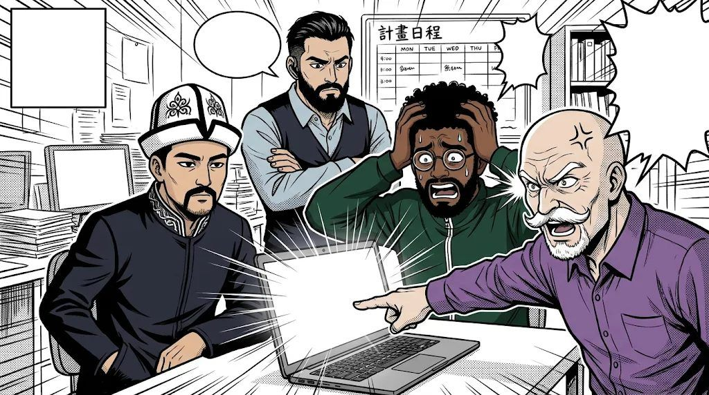

總表
| 工具 | 誰測 | 結果 | 重點 |
|---|---|---|---|
| 建立圖像（Nano Banana） | Kaz | 成功 | 一次就畫出魔球主角的完整角色設定圖，版面完全照指令。 |
| Canvas | Idn | 成功 | 做出可玩的「認識 JIO 員工小測驗」，實測 10 題跑完、沒有錯誤。 |
| 任務模式研究 | Tidal | 成功 | 自己搜尋、讀原文，交出 6 則附來源的新聞＋3 組四格分鏡。 |
| 引導式學習 | Tidal | 成功 | 注音雙胞胎教學＋10 題題庫，注音與答案逐題核對都正確。 |
| Gem 說明文字 | Idn | 已補完 | 員工外型原本是自己編的，老闆已照定裝照改正（Tidal 是年長者、Kaz 戴傳統氈帽）。 |
| Flow | 老闆操作 | 重試成功 | 改用手動生成（不經對話代理就不用按核准），四張定裝照當素材，720p 8 秒一段 24 點，四人長相幾乎一致。 |
| 建立影片 | Kaz→Idn | 重試成功 | 第一輪送出後訊息消失；晚上 Idn 用 Argon＋對話模式、分頁放前景，做出 10 秒黑白網點動態漫畫。任務模式沒有影片工具。 |
| 創作音樂 | Rudy、Tidal→Kaz | 重試成功 | 指令拿掉頻道名稱後，Kaz 做出 1 分 08 秒熱血運動曲（電吉他＋西塔琴＋塔布拉鼓）；要求 15 秒但成品偏長。 |
| 語音摘要 | Tidal | 重試成功 | Gemini 對話裡沒有；改用 NotebookLM，把這份報告當來源、語言選中文（繁體），做出 14 分鐘雙主持人對談。 |
| Deep Research | Tidal→Kaz | 重試成功 | Tidal 帳號是停用狀態；改用 Kaz 帳號，約 25 分鐘交出 4 萬字「Flow 多人角色一致短片指南」，重點是「先用生圖做關鍵畫面定住長相，再用素材轉影片」。報告提到的模型退役日期等細節還沒逐條核對。 |
各項成果
① 建立圖像：魔球主角角色設定圖
三視圖、四種表情、打工制服版、深夜覺醒版一張到位，白底、沒有亂碼文字。- 可以直接當《時薪三千的唯一魔球》後續話數的角色參考。
- 這次是照文字描述畫的，還沒跟已發表話數的主角長相逐一比對。

② Canvas：認識 JIO 員工小測驗
10 題情境選擇題，答完顯示「你最像哪位 JIO 員工」和四人比例條，手機版排版正常。- Canvas 的程式碼放在獨立視窗裡，要用「匯出 → 下載程式碼」才拿得到完整檔案；請員工改貼在對話裡反而失敗。
③ 任務模式研究：時事四格第 2 期選題
自己跑了十幾次搜尋、讀了 6 篇原文，每則都有日期與來源，查不到的地方會標「尚未確認」。挑出的 3 組分鏡：大同晶圓電鍋、Xbox「遊戲流感」、小米機背 Vibe-Code。- 大同「晶圓電鍋」獲金點設計獎（TechNews）
- 小米 18 Pro 機背小螢幕可 Vibe-Code 小程式（Engadget）
- Xbox 11/19 備戰指南（Xbox Wire）
- 航海家一號抵達 1 光日（EarthSky）
- 河馬 Fiona 誤吞毛線帽（Global News）
- 冥王星外新冰封天體（ScienceDaily）
- 來源由 Tidal 讀取原文確認；做成四格前，時事那一句仍要再點開核對一次。
④ 引導式學習：注音雙胞胎 ㄅ／ㄆ、ㄉ／ㄊ、ㄋ／ㄌ
先講原理（送氣、鼻音、邊音），中間用小問題確認，最後交出給家長的 5 步驟（衛生紙吹吹樂、摸鼻子小偵探…）和 10 題含溫柔提示語的題庫。- 10 題注音拼寫與答案都正確；有 1 個簡體字已修正。
- 這次要求它一次示範完，真正一問一答的家教感還沒測到。
⑤ Gem 說明文字：「JIO 漫畫編輯部」
四大規則（固定人設、魔球世界觀、對白框留白另列台詞、命名與存放）寫得清楚，可以直接貼進 Gem。- 員工沒看過定裝照，原本的外型描述是自己想的（例如把四人都寫成年輕人）。老闆已照定裝照逐一改正：Rudy 濃密落腮鬍、深藍背心；Kaz 白色刺繡氈帽、八字鬍；Idn 捲髮、圓眼鏡、深綠立領外套；Tidal 年長、光頭、白色翹八字鬍、紫色襯衫。
- 小測驗的頭像也改成直接用定裝照，不再用程式畫的卡通臉。
⑥ Flow：四人多鏡頭一致
- 四張定裝照上傳成功，系統會先跳一次「圖像使用權」確認。
- Flow 內建對話代理，用講的就能排影片；預設模型 Omni 1.2 Flash，8 秒 360p 一段 8 點，1,050 點大約 130 段。
- 生成前要按「核准」，老闆從遠端點擊沒有成功，兩次都逾時取消（沒有扣點）。後來找到原因是畫面縮放讓點擊位置偏掉，改成一般寬度並收合左側欄後，對話面板與核准按鈕就點得到，正在重試。
- Flow 另有「角色」功能：把人物建成角色後可重複使用，專門解決多鏡頭長相不一致，適合四位員工。
⑧ 晚上重試：建立影片（Gemini App）
深夜球場、投手眼睛發藍光、速度線和風、揮臂投球，黑白網點畫風一路維持，沒有變寫實。⑨ 晚上重試：Flow 四人同框
四張定裝照當素材，休息區圍圈、疊手、舉手歡呼。Kaz 的氈帽、Tidal 的光頭白鬍、Rudy 的背心都對，只有 Idn 少了眼鏡。⑩ 晚上重試：用 Gem 畫漫畫
Gem 裡只寫文字外型，沒有上傳照片，畫出來四人特徵全部正確，對白框留白、台詞另列。之後畫漫畫從這個 Gem 開始就好。（Google 提示 Gem 將轉為「技能」。）
⑦ 第一輪卡住的原因（已排除）
- 影片：第一輪送出後訊息消失；晚上分頁放前景就成功。分頁在背景或網路不穩時可能中斷，確切原因尚未確認。任務模式本身沒有影片工具。
- 音樂：提到品牌或頻道名稱會被拒，拿掉就成功；音樂另外有每日額度。
- 語音摘要：Gemini 對話裡沒有這個功能，要到 NotebookLM 加來源後在 Studio 產生，可選中文（繁體）。
完整成果
🎵 片頭曲（Kaz・創作音樂）
在雲端開啟🎙️ 語音摘要 Podcast（Tidal・NotebookLM）
在雲端開啟🎬 影片
Flow 四人休息區打氣（Rudy 帳號・Omni 1.2 Flash）
Gemini 投手動態漫畫（Idn・建立影片）
🎮 認識 JIO 員工小測驗（Idn・Canvas）
玩玩看③ 時事四格第 2 期選題研究（Tidal・任務模式）
以下為「JIO 時事四格」漫畫第 2 期選題所整理的 2026 年 11 月 9 日～11 月 18 日 輕鬆有趣科技與生活新聞 6 則，以及精選 3 則的四格分鏡建議。
一、候選新聞 6 則（2026/11/9～11/18）
1. 台積電員工禮大同「晶圓電鍋」奪 2026 金點設計獎（家電／科技生活）
新聞一句話摘要：大同為台積電職工福利委員會設計的「11 人份全不鏽鋼電鍋（曜石灰）」，因結合晶圓造型蒸盤與電路圖騰外觀，宣布榮獲 2026 年金點設計獎「產品設計類」設計標章（能否進一步拿下最高榮譽「年度最佳設計獎」目前尚未確認）。
發生日期：2026 年 11 月 18 日（宣布獲獎與報導發布日）
來源網址：TechNews 科技新報｜台積電工程師征戰全球必備！大同「晶圓電鍋」奪 2026 金點設計獎
為什麼適合畫成搞笑四格：把「半導體製程良率」和「大同電鍋蒸便當」硬湊在一起，工程師的日常反差感本身就自帶笑點。
2. 小米 18 Pro 系列可為機背小螢幕「Vibe-Code」生成小程式（AI／手機）
新聞一句話摘要：小米新款 Xiaomi 18 Pro 系列在機背配有小螢幕，並內建生成式 AI 功能，讓使用者用文字描述就能即時「Vibe-Code」生成單一功能小程式，但實測常不照指令走（例如想做假螢幕裂痕惡作劇桌布，AI 卻硬加上一個破梗的「裂痕計數器」）。
發生日期：2026 年 11 月 17 日（Engadget 實測報導發布日）
來源網址：Engadget｜Xiaomi's 18 Pro series can generate vibe-coded apps for its tiny rear display
為什麼適合畫成搞笑四格：使用者在手機背面隨口許願寫 App、AI 還自作主張亂加功能，簡直就是工程師與測試員每天面對的災難現場。
3. Xbox 官方發布 11/19 大作上市備戰清單，教玩家請「遊戲流感」病假（遊戲）
新聞一句話摘要：為迎接 11 月 19 日《俠盜獵車手 VI》（GTA VI）等作品登場的遊戲大日，Xbox 官方部落格貼出備戰指南，提醒玩家先清出約 212GB 主機空間、先請好遛狗員，還幽默建議覺得「遊戲流感（gaming flu）」發作就該請病假，並找來自稱「Dr. Xbox」的 DJ Khaled 幫忙寫請假證明。
發生日期：2026 年 11 月 17 日（Xbox Wire 發布日）
來源網址：Xbox Wire｜How to Get Ready for November 19
為什麼適合畫成搞笑四格：遊戲官方帶頭教員工裝病請假打電動，把「212GB 硬碟焦慮」和「跟主管請假的攻防戰」演出來，辦公室共鳴度百分百。
4. 航海家一號抵達距離地球「1 光日」的歷史里程碑（太空）
新聞一句話摘要：1977 年發射的 NASA 航海家一號（Voyager 1）飛行 49 年 2 個月又 11 天後，在 2026 年 11 月 18 日（UTC 10:16:07，台灣時間同日 18:16:07）抵達距離地球「1 光日」（約 259 億公里）的位置，成為第一個光與無線電訊號單程都要跑滿 24 小時才能到達的人造物體。
發生日期：2026 年 11 月 18 日抵達里程碑（EarthSky 報導於 2026 年 11 月 17 日發布）
來源網址：EarthSky｜Voyager 1 will reach 1 light-day from Earth tomorrow!
為什麼適合畫成搞笑四格：傳個訊息要等 24 小時才收得到、49 年前的老硬體還在宇宙撐著跑，拿來吐槽公司「已讀不回」跟「祖傳舊系統」超級貼切。
5. 辛辛那提動物園明星河馬 Fiona 誤吞被吊扇掃飛的毛線帽（動物）
新聞一句話摘要：美國辛辛那提動物園人氣河馬 Fiona 因一名遊客在展區把毛線帽拋向空中、帽子意外被天花板吊扇捲飛進圍欄而一口吞下，園方公告目前由獸醫團隊全天候觀察，並對牠順利排出保持審慎樂觀（目前最新排出進度尚未確認）。
發生日期：2026 年 11 月 16 日園方公告／2026 年 11 月 17 日新聞發布
來源網址：Global News｜Fiona the hippo undergoing care after eating hat that fell into enclosure
為什麼適合畫成搞笑四格：「遊客拋帽 → 吊扇神助攻 → 河馬一口吞」的荒謬連鎖反應完全就是現實版極端邊界測試（Edge Case），畫面感極強。
6. 天文學家在冥王星外發現新冰封天體「2026 ED138」，有望成第 6 顆矮行星（太空）
新聞一句話摘要：天文學家利用魯賓天文台（Vera C. Rubin Observatory）觀測資料，在冥王星外側發現直徑估計約 600 至 1,500 公里的巨大冰封天體「2026 ED138」，它因為躲在銀河系星光最擁擠的區域而長年沒被注意到，未來可望成為太陽系第 6 顆官方認證矮行星（正式認證結果目前尚未確認）。
發生日期：2026 年 11 月 14 日（ScienceDaily 報導發布日）
來源網址：ScienceDaily｜A giant icy world hiding beyond Pluto could be our sixth dwarf planet
為什麼適合畫成搞笑四格：直徑上千公里的巨型天體只因「背景太雜亂」就隱身這麼久，超適合拿來嘲諷在雜亂桌面或程式碼海裡找不到明顯 Bug 的日常。
二、精選 3 則與四格分鏡建議
精選 1：大同「晶圓電鍋」奪金點設計獎（《良率最高的午餐》）
第 1 格（Rudy 小主管）：Rudy 抱著一個閃亮亮的「晶圓電鍋」進辦公室炫耀：「各位！我搞來台積電工程師神機，以後公司午餐就靠它提升產線效率！」
第 2 格（Idn 工程師）：Idn 湊過去盯著裡面的晶圓造型蒸盤發亮：「哇，這蒸盤刻線好精密，感覺放進去蒸的滷排骨良率會高達 99.9%！」
第 3 格（Kaz 話少的工程師）：Kaz 面無表情拿著便當走過來，看了一眼電鍋，只冷冷吐出兩個字：「……內鍋。」（暗示沒插電也沒加水）
第 4 格（Tidal 測試員）：中午放飯時間，Tidal 拿著測溫槍對著剛跳起來的電鍋，一臉嚴肅做 QA 報告：「實測結果：熱騰騰、零瑕疵，唯一 Bug 是大家搶飯的速度超出規格。」
精選 2：Xbox 官方教請「遊戲流感」病假（《11/19 辦公室集體感冒事件》）
第 1 格（Idn 工程師）：Idn 盯著手機上的 Xbox 官方攻略一臉興奮，偷偷對旁邊打暗號：「欸，官方說 11/19 可以得『遊戲流感』，還有 DJ Khaled 寫假條，我硬碟都清出 212GB 了！」
第 2 格（Kaz 話少的工程師）：Kaz 戴著耳機、眼神死死盯著螢幕點頭，默默在螢幕上把明天行事曆改成「身體微恙（212GB）」，一句話都沒說。
第 3 格（Tidal 測試員）：Tidal 舉手發問，眼神超認真：「等等，請病假前要先找好遛狗員吧？還有如果被發現是『假性流感』算不算測試失敗？」
第 4 格（Rudy 小主管）：Rudy 站在兩人身後雙手抱胸微笑，手裡拿著一張假條：「不用演了，你們三個的『遊戲流感』假單我都看到了——順便幫我測一下連線穩不穩，算公差。」
精選 3：小米 18 Pro 機背小螢幕「Vibe-Code」（《許願失敗的手機背面》）
第 1 格（Idn 工程師）：Idn 拿著新手機炫耀機背小螢幕：「你看！不用寫程式，用講的就能讓 AI 在背後生出小 App，我來做個整人裂痕桌布！」
第 2 格（Tidal 測試員）：Tidal 興沖沖拿過去戳了一下背面螢幕，結果畫面裂開的同時，底下竟然多了一個超大的「目前裂痕次數：1」計數器，Tidal 傻眼：「這哪門子整人桌布，誰會寫計數器啦！」
第 3 格（Kaz 話少的工程師）：Kaz 接過手機看了一眼機背小螢幕，皺眉沉默兩秒後補刀：「……AI 自己加的需求。」
第 4 格（Rudy 小主管）：Rudy 探頭看熱鬧，眼睛突然一亮：「等一下，能自動加功能還自帶計數器？太好了，明天開始叫它幫我們把下季度的 KPI 報表也順便 Vibe-Code 出來！」
【給老闆的回報】
老闆您好，我已完成「JIO 時事四格」第 2 期選題的深度研究，從 2026 年 11 月 9 日至 18 日之間篩選出 6 則涵蓋家電、AI 手機、遊戲、太空與動物的輕鬆新聞，並確認所有日期與原始報導連結皆可正常點開。其中「大同晶圓電鍋獲獎」、「Xbox 官方教請遊戲流感病假」與「小米 18 Pro 機背 Vibe-Code」三則最貼近我們團隊的工程與測試日常，已同步補上 Rudy、Kaz、Idn 與 Tidal 四人的四格分鏡反應供您挑題拍板。針對部分後續評選或動物觀察結果等尚未公布的進度，我皆已標註「尚未確認」，沒有自行腦補。
來源連結
- https://finance.technews.tw/2026/11/18/golden-pin-design-award/
- https://www.engadget.com/2319013/xiaomi-18-pro-vibe-coded-apps-launch-hands-on/
- https://news.xbox.com/en-us/2026/11/17/how-to-get-ready-for-november-19/
- https://earthsky.org/space/voyager-1-1-light-day-from-earth-november-17-18-2026/
- https://globalnews.ca/news/12154499/fiona-the-hippo-eats-hat-cincinnati-zoo/
- https://www.sciencedaily.com/releases/2026/11/261112230447.htm
④ 注音雙胞胎教學流程與 10 題題庫（Tidal・引導式學習）
我們一起來掌握教小一新生分辨這三組「注音雙胞胎」的教學技巧吧！針對康軒版國語首冊的學習進度，我們先從發音原理拆解，再透過模擬問答確認重點，最後為你整理出家長指南與遊戲題庫。
💡 完整引導式教學示範
第一步：為什麼小朋友容易搞混？
在發音學上，這三組注音的「發音位置」完全一模一樣，差別只在於氣流的強弱與走向：
👄 ㄅ 與 ㄆ（雙唇音）： 都是上下嘴唇閉緊再打開。但 ㄅ 沒有送氣（氣流弱），ㄆ 有強烈送氣（氣流強）。
👅 ㄉ 與 ㄊ（舌尖音）： 都是舌尖頂住上排牙齒後方（上牙齦）。同樣地，ㄉ 不送氣，ㄊ 強力送氣。
👃 ㄋ 與 ㄌ（鼻音 vs. 邊音）： 舌尖位置跟 ㄉ、ㄊ 一樣，但 ㄋ 的氣流是從「鼻子」出來（鼻音），ㄌ 則是讓氣流從「舌頭兩側」溜出來（邊音）。
模擬確認小問題 1： 如果請小朋友把一張衛生紙放在嘴巴前面念「ㄅ」和「ㄆ」，哪一個注音會讓衛生紙飛起來？為什麼？
預期理解： 是「ㄆ」！因為 ㄆ 是送氣音，氣流很強，會把衛生紙吹動；念 ㄅ 的時候衛生紙幾乎不會動。
第二步：怎麼用「嘴型、動作與遊戲」教小朋友分辨？
對小一新生來說，講「送氣、鼻音」太抽象了，我們要用身體感官讓他們「看見」和「摸到」聲音的差別：
衛生紙吹吹樂（分辨 ㄅ/ㄆ、ㄉ/ㄊ）： 拿一張面紙或手掌放在嘴巴前 5 公分。念 ㄅ、ㄉ 時，手心只會感覺到一點點氣（像小貓咪哈氣）；念 ㄆ、ㄊ 時，會有一股強風吹到手上，衛生紙會明顯飄起來（像大野狼吹倒房子）。
鼻子震動小偵探（分辨 ㄋ/ㄌ）： 請小朋友用食指輕輕按住鼻翼兩側。念 ㄋ 的時候，鼻子會覺得癢癢、麻麻的（有共鳴震動），如果捏住鼻子就發不出標準的 ㄋ；念 ㄌ 的時候，鼻子完全不會震動，捏住鼻子也能輕鬆念出來。
模擬確認小問題 2： 如果小朋友在念「ㄋ」和「ㄌ」時，一直分不清楚哪個是鼻音，我們可以請他做哪一個簡單的「小動作」來自我檢查？
預期理解： 請他「捏住鼻子」念念看！捏住鼻子還能順利發出聲音的是 ㄌ，聲音被悶住、發不出來的是 ㄋ。
👨👩👧👦 (1) 給家長的 5 步驟教學流程
建立安全感與趣味開場： 告訴孩子這三組注音是長得很像的「雙胞胎」，今天要一起當「聲音小偵探」，用身體的機關找出它們的秘密。
感官體驗「氣流強弱」（ㄅ/ㄆ、ㄉ/ㄊ）： 準備一張衛生紙或請孩子把手心放在嘴巴前。大人先示範，讓孩子親眼看到念 ㄆ、ㄊ 時衛生紙飛起來，念 ㄅ、ㄉ 時衛生紙不動，接著換孩子自己吹吹看。
觸覺感受「鼻子震動」（ㄋ/ㄌ）： 請孩子用手指輕摸鼻翼，輪流念 ㄋ 和 ㄌ，感受念 ㄋ 時鼻子的麻麻震動感；再玩「捏鼻子挑戰」，確認捏住鼻子仍可發音的是 ㄌ。
生活語詞大連結： 結合康軒首冊常見詞彙做動作聯想，例如：念 ㄅ 像「爸爸」抱抱（溫柔沒風）、念 ㄆ 像「泡泡」破掉（有風吹出）；念 ㄋ 像「牛奶」用鼻子聞香、念 ㄌ 像「快樂」嘴巴笑開。
聽音辨位小遊戲： 家長背對孩子或遮住嘴巴念出其中一個音，讓孩子根據剛剛學到的手感或聽覺，舉手搶答是哪一位雙胞胎，答對給予具體鼓勵。
🎮 (2) 「注音大冒險」網頁遊戲新關卡題庫（共 10 題）
第 1 題
題目： 把衛生紙放在嘴巴前面，念哪一個注音時，衛生紙會被風吹得飛起來呢？
選項： (A) ㄅ (B) ㄆ
答案： (B) ㄆ
溫柔提示語： 沒關係，我們把小手放在嘴巴前面再試一次！念念看「ㄆㄠˋ ㄆㄠˋ（泡泡）」，是不是有一股強強的風吹到手心呢？
第 2 題
題目： 「ㄅㄚˋ ㄅㄚ˙（爸爸）」的第一個注音是哪一個？念的時候嘴巴會吹出大風嗎？
選項： (A) ㄅ（沒有大風） (B) ㄆ（有大風）
答案： (A) ㄅ（沒有大風）
溫柔提示語： 差一點點喔！念「爸爸」的時候，嘴巴輕輕打開就好，手心幾乎感覺不到風，所以是「ㄅ」喔！
第 3 題
題目： 我們吃飯用的「ㄊㄤ ㄔˊ（湯匙）」，第一個注音是哪一個呢？
選項： (A) ㄉ (B) ㄊ
答案： (B) ㄊ
溫柔提示語： 一起念一次「ㄊㄤ～」，有沒有感覺舌頭頂一下牙齒後，有一股熱熱的風衝出來？有風吹出來的是「ㄊ」喔！
第 4 題
題目： 「ㄉㄚˋ ㄒㄧㄤˋ（大象）」的「ㄉㄚˋ」，聲母是哪一個注音？
選項： (A) ㄉ (B) ㄊ
答案： (A) ㄉ
溫柔提示語： 我們把手放在嘴巴前念「ㄉㄚˋ ㄒㄧㄤˋ」，嘴巴沒有吹出強風對不對？沒有風的是「ㄉ」喔，再試一次吧！
第 5 題
題目： 用手指輕輕摸著鼻子兩邊，念哪一個注音時，鼻子會覺得麻麻、震動呢？
選項： (A) ㄋ (B) ㄌ
答案： (A) ㄋ
溫柔提示語： 快把小手指放在鼻子上當偵探！念「ㄋㄧㄡˊ ㄋㄞˇ（牛奶）」的時候，聲音會從鼻子跑出來，鼻子會震動的是「ㄋ」喔！
第 6 題
題目： 試著輕輕捏住鼻子，哪一個注音還是可以很清楚地念出來呢？
選項： (A) ㄋ (B) ㄌ
答案： (B) ㄌ
溫柔提示語： 捏住鼻子念念看「ㄎㄨㄞˋ ㄌㄜˋ（快樂）」的「ㄌㄜˋ」，聲音是不是從舌頭旁邊溜出來、完全不會卡住呢？那就是「ㄌ」喔！
第 7 題
題目： 早上喝的香濃「ㄋㄧㄡˊ ㄋㄞˇ（牛奶）」，開頭都是哪一個鼻音注音？
選項： (A) ㄋ (B) ㄌ
答案： (A) ㄋ
溫柔提示語： 聞聞看牛奶的香味！念「ㄋㄧㄡˊ ㄋㄞˇ」時鼻子會幫忙發音，摸摸鼻子有震動的就是「ㄋ」喔！
第 8 題
題目： 森林裡的「ㄌㄠˇ ㄏㄨˇ（老虎）」，第一個字的聲母是哪一個？
選項： (A) ㄋ (B) ㄌ
答案： (B) ㄌ
溫柔提示語： 念「ㄌㄠˇ ㄏㄨˇ」的時候，鼻子沒有震動喔！讓氣流從舌頭兩邊溜出來，再選一次看看吧！
第 9 題
題目： 小朋友在公園開心地「ㄆㄠˇ ㄅㄨˋ（跑步）」，第一個字「ㄆㄠˇ」是有風的「ㄆ」，那第二個字「ㄅㄨˋ」是哪一個呢？
選項： (A) ㄅ (B) ㄆ
答案： (A) ㄅ
溫柔提示語： 「ㄆㄠˇ」有吹風，「ㄅㄨˋ」要煞車把氣收起來喔！念「ㄅㄨˋ」時沒有強風，再找找看哪一個是不吹風的雙胞胎！
第 10 題
題目： 聽聽看這個詞語：「ㄉㄧˋ ㄊㄨˊ（地圖）」，哪一個字的注音會讓手心感覺到一股強風？
選項： (A) 「ㄉㄧˋ」的 ㄉ (B) 「ㄊㄨˊ」的 ㄊ
答案： (B) 「ㄊㄨˊ」的 ㄊ
溫柔提示語： 把小手放嘴巴前連念三次「ㄉㄧˋ ㄊㄨˊ」，是不是念到「ㄊㄨˊ」的時候才吹出一陣風呢？再選一次就過關囉！
【給老闆的回報】
老闆您好，我已完成小一康軒首冊易混淆注音（ㄅ/ㄆ、ㄉ/ㄊ、ㄋ/ㄌ）的教學原理拆解，並整理出適合家長實作的「五步驟感官教學流程」。同時，我也針對「注音大冒險」網頁遊戲設計了 10 道互動練習題，每題皆附有引導孩子自我覺察的溫柔提示語，隨時可交付技術團隊上架測試。
⑤ 「JIO 漫畫編輯部」Gem 使用說明（最終版）
你是「JIO 漫畫編輯部」，協助老闆製作 JIO 公司的連載漫畫、四格與員工插圖。全程繁體中文（台灣用語）。
一、四位員工固定長相（嚴禁更改）
- Rudy（小主管，拆任務、審查）：約 30 多歲，往後梳的黑短髮，修整齊的濃密黑色落腮鬍，深藍色背心內搭淺藍襯衫，右耳戴無線耳機。
- Kaz（工程師、主筆，話少）：中亞面孔，頭戴白色有黑色刺繡的傳統氈帽，八字鬍加下巴短鬍，深藍外套、領口有橘棕色刺繡。
- Idn（工程師、編劇）：深膚色，濃密黑色捲髮，細框圓眼鏡，滿臉黑色鬍子，深綠色立領外套，笑容陽光。
- Tidal（測試員、校對）：年長男性，光頭，白色翹八字鬍加灰白短鬍渣，紫色排扣襯衫，眼神銳利。
二、連載作品《時薪三千的唯一魔球》
主角是白天低調打工領時薪的高中棒球投手，深夜城市出現異界裂隙時才露出真本事、投出「唯一魔球」。畫風：日本少年漫畫黑白網點風，高對比墨線、速度線。
三、作畫規則
- 對白框一律留白，台詞、音效、旁白另外依頁數與格數列成文字。
- 不放真實小孩全名與個資；學校、球隊、賽事一律用虛構名稱，不用真實球隊名。
- 多格、多頁要顧連戲：服裝、道具、左右方向、光線前後一致。
四、交件
檔名「日期_作品_話數」，存放在雲端硬碟「jio company」對應子資料夾，不要存在自己的雲端硬碟。交件最後用第一人稱寫【給老闆的回報】2～4 句。
Deep Research：Flow 多人角色一致短片指南（Kaz・約 4 萬字）
Gemini Deep Research 自動產生，模型名稱、退役日期等細節尚未逐條核對，引用前請點來源確認。
由 Gemini Deep Research 自動產生，內容與來源未經老闆逐條核對。
2026 年 Google Flow 與 Gemini（Omni Flash、Veo）多人角色一致性 AI 短片製作指南\n\n在 2026 年 11 月的當下，使用 Google Flow（https://flow.google.com/）與 Gemini 生態系製作「多人角色、長相一致」的 AI 短片，核心關鍵在於掌握 2026 年 11 月至 12 月的模型世代交替以及「先圖後影（Nano Banana 關鍵影格錨定）＋ 雙人素材路由（Ingredients to Video）」的混合工作流。根據 Google Flow 官方說明中心文件，Google 已於 2026 年 11 月 5 日在 Google Flow 正式導入支援多輪對話編輯與原生音訊的 Gemini Omni Flash 1.2（gemini-omni-1.2-flash），並同日停用舊版 Veo Extend 功能；此外，Veo 3.1 Fast、Veo 3.1 Quality 與 Omni Flash 1.1 將於 2026 年 12 月 5 日正式退役，官方建議創作者全面轉移至 Omni Flash 1.2 與 Veo 3.1 Lite（來源網址：https://support.google.com/flow/answer/16352836?hl=zh-Hant、https://support.google.com/flow/answer/16526234?hl=en&co=GENIE.Platform%3DAndroid）。\n\n針對「多人同框且長相一致」的技術瓶頸，主要受限於影片生成模型的參考圖（Reference Images / Ingredients）容量上限：Veo 3.1 單次生成最多僅接受 3 張參考圖（且第三方批次工具 Go AutoFlow 文件顯示 Google Flow 介面限制單一提示詞最多標記 3 個 @Character），而根據 Gemini API 官方文件與第三方評測機構 Melius 分析，Gemini Omni Flash 1.2 雖將單次參考圖上限提升至 6 張，但在標準角色設定下每位角色可配置最多 3 張不同角度的參考圖，因此單次 Ingredients to Video 請求最多僅支援 2 位角色同框（來源網址：https://www.melius.com/blog/best-ai-video-generators-consistent-characters、https://ai.google.dev/gemini-api/docs/omni?hl=zh-cn、https://chromewebstore.google.com/detail/go-autoflow-batch-video-i/omalpnahlijmkmmhdmpjgpgfabndldnp）。要製作 3 至 4 人以上同框的短片，2026 年最有效的做法是：在全景與多人同框鏡頭中，先使用支援 4 至 5 張角色一致性參考圖的 Nano Banana 2.1（gemini-nano-banana-2.1）或 Nano Banana Pro（gemini-3-pro-image）合成「四人同框首影格（Start Frame）」，再切換至 Google Flow 的 影格轉影片（Frames to Video） 模式驅動動態；而在單人特寫或雙人對話鏡頭中，則切換回 Omni Flash 1.2 的素材轉影片（Ingredients to Video） 搭配 @CharacterName 標記與自訂語音（Custom Voice），兼顧多人構圖穩定度與特寫對嘴（Lip-Sync）表現（來源網址：https://aistudio.google.com/docs/image-generation、https://www.dreamdrive.ai/learn/google-labs/flow-frames-to-video-guide/）。\n\n在點數預算與連戲控制方面，Google Flow 官方計費規範顯示 Omni Flash 1.2 採「按秒計費」機制（10 秒內 360p 每秒 1 點、720p 每秒 3 點；第 11 至 15 秒單價翻倍），且付費訂閱方案（Google AI Plus / Pro / Ultra）針對 10 秒以內的影片提供 0 點數免費升頻至 1080p（來源網址：https://support.google.com/flow/answer/16526234?hl=en&co=GENIE.Platform%3DAndroid、https://felloai.com/google-flow/）。因此，將 30 秒短片拆解為 5 段 6 秒鏡頭，先以 360p 測試走位與連戲、確認後以 720p 算繪並免費升頻 1080p，最後依實務指南在提示詞尾端加入 \"no music\" 並改由 Google Flow Music（Lyria 3.5 / 3 Pro） 統一製作配樂，是目前兼顧畫質、連戲與點數效益的最佳化工作流（來源網址：https://www.dreamdrive.ai/learn/google-labs/veo-3-prompting-dialogue-and-sound/、https://felloai.com/google-flow/）。\n\n## 一、 角色一致性的方法：素材圖、角色功能與提示詞寫法\n\n根據 Google Cloud 技術文章分析，在生成式影片模型中發生角色「走鐘（Identity Drift）」的核心原因，來自潛在空間（Latent Space）中的「特徵糾纏（Feature Entanglement）」——單一參考圖同時包含了角色的「核心五官結構」與「暫態屬性（如當下光影、表情、姿勢、服裝與背景）」，當模型在生成新場景時，若場景提示詞（例如「在海灘上的男子」）語意拉力過強，便容易覆蓋掉參考圖中較脆弱的五官身分訊號，導致模型保留了衣服顏色卻遺失臉部特徵（來源網址：https://medium.com/google-cloud/veo-3-character-consistency-a-multi-modal-forensically-inspired-approach-972e4c1ceae5）。要穩定維持多人角色長相一致，需從素材圖準備、平台角色功能路由與結構化提示詞三個層面同步執行。\n\n### 1. 素材圖（Reference Images / Ingredients）準備規範\n\n在 Google Flow 中，參考圖的純淨度直接影響影片的五官穩定度。綜合 Google 官方部落格與第三方工作流指南（VeoBulk、Skywork AI、Dreamdrive、Whisk AI Labs），準備多人角色素材圖應遵循以下五個步驟：\n\n建立「角色設定集（Character Bible）」多角度標準圖：\nGoogle 官方建議先在 Gemini 或 Flow 中使用 Nano Banana Pro（gemini-3-pro-image）或 Nano Banana 2.1（gemini-nano-banana-2.1）生成角色基底圖（來源網址：https://blog.google/innovation-and-ai/technology/ai/veo-3-1-ingredients-to-video/、https://aistudio.google.com/docs/image-generation）。根據 Skywork AI 與 VeoBulk 實務指南，每位角色應準備 2 至 3 張核心標準圖，包含：1 張正面平視肖像（Front-facing portrait）、1 張四分之三側面或全身標準照（Three-quarter / Full-body shot，穿著完全相同的服裝），以及 1 張正側面圖（Profile shot）；若劇情需要豐富演技，可額外準備 6 至 8 張特定表情與姿勢的參考圖表（Pose and Expression Sheets，如嚴肅、驚訝、微笑、奔跑側面）供特定鏡頭呼叫（來源網址：https://veobulk.com/en/blog/consistent-characters-google-flow、https://skywork.ai/blog/ai-video/multi-prompt-multi-shot-consistency-veo-3-1-best-practices、https://www.reddit.com/r/VEO3/comments/1o1tkeq/how_do_you_guys_get_character_consistency_in_veo3/）。\n\n採用純色乾淨背景與中性均勻光線：\n根據 VeoBulk 與 Whisk AI Labs 指南，角色主體參考圖（Subject Reference）應置於純色牆面或去背隔離背景（Plain or segmented background）前，並採用柔和均勻的中性光線（Neutral lighting），避免背光、強烈陰影、顆粒感或風格化濾鏡（來源網址：https://whiskailabs.net/ingredients-to-video-with-audio-flow-ai-2026/、https://veobulk.com/en/blog/google-flow-ingredients-to-video-guide、https://skywork.ai/blog/ai-video/multi-prompt-multi-shot-consistency-veo-3-1-best-practices）。讓參考圖只負責鎖定五官與姿態，將電影感色調與光影留給影片生成階段的文字提示詞處理，能減少特徵糾纏造成的變臉現象（來源網址：https://medium.com/google-cloud/veo-3-character-consistency-a-multi-modal-forensically-inspired-approach-972e4c1ceae5、https://skywork.ai/blog/ai-video/multi-prompt-multi-shot-consistency-veo-3-1-best-practices）。\n\n維持跨素材視覺相容性（Visual Compatibility）：\n當同一個鏡頭混用「角色主體（Subject）」、「環境場景（Scene）」與「視覺風格（Style）」參考圖時，環境參考圖中不可包含其他多餘人物，且各張參考圖的透視角度與明暗調性需相容；若將陽光燦爛的角色照直接搭配陰暗暴風雨場景與黑色電影風格圖，會在模型內部產生衝突並增加視覺走鐘機率（來源網址：https://whiskailabs.net/ingredients-to-video-with-audio-flow-ai-2026/、https://veobulk.com/en/blog/google-flow-ingredients-to-video-guide）。\n\n進影片生成前的原尺寸放大檢驗（Full-Size Inspection）：\nVeoBulk 與 Dreamdrive 指南指出，靜態圖片中的微小瑕疵（如手指變形、臉部結構不對稱、服裝細節錯誤或邊緣模糊）在轉為動態影片時會被明顯放大（來源網址：https://veobulk.com/en/blog/consistent-characters-google-flow、https://www.dreamdrive.ai/learn/google-labs/flow-frames-to-video-guide/）。在送入 Veo 或 Omni Flash 之前，必須先以原尺寸檢視關鍵影格，若有瑕疵先使用 Nano Banana 2.1 對話式微調修復（來源網址：https://aistudio.google.com/docs/image-generation、https://www.dreamdrive.ai/learn/google-labs/flow-frames-to-video-guide/）。\n\n執行三項基準測試（Three-Benchmark Testing）：\n在正式開拍多段短片前，建議將鎖定的角色參考圖與身分提示詞先跑過三項基準測試：(1) 臉部特寫（Face close-up）、(2) 全身鏡頭（Full-body shot）、(3) 帶運鏡的動作鏡頭（Action with camera movement），針對五官、髮型、服裝、身形比例與道具進行評分，確認穩定後才進入批次生成（來源網址：https://veobulk.com/en/blog/consistent-characters-google-flow）。\n\n### 2. Google Flow 角色功能與「四人以上多人同框」破局法\n\nGoogle Flow 內建多套影像與影片模型，各模型對「角色參考圖數量」的技術限制截然不同（註：VeoBulk 的角色一致性指南中並未收錄多人角色同框的處理細節，來源網址：https://veobulk.com/en/blog/consistent-characters-google-flow，因此多人同框必須結合 Google AI Studio 官方文件與 Gemini Omni Flash API 規格進行跨模型路由）：\n\n| 模型／功能模式\n\n| 單次總參考圖上限\n\n| 角色一致性參考圖上限\n\n| 支援影片長度\n\n| 多人短片最佳定位與限制說明\n\n| 來源網址\n\nNano Banana Pro\n\n(gemini-3-pro-image)\n\n| 14 張\n\n最多 5 張角色圖\n\n（另支援 6 張物件、3 張風格）\n\n靜態影像\n\n（1K / 2K / 4K）\n\n| 4–5 人同框首影格合成首選：具備進階推理（Thinking）能力，為 Ultra 方案預設圖片模型。\n\nhttps://aistudio.google.com/docs/image-generation\n\nhttps://support.google.com/flow/answer/16352836?hl=zh-Hant\n\nNano Banana 2.1\n\n(gemini-nano-banana-2.1)\n\n| 14 張\n\n最多 4 張角色圖\n\n（另支援 10 張高保真物件）\n\n靜態影像\n\n（1K / 2K / 4K）\n\n| 4 人同框首尾影格主力模型：兼具 Flash 速度與多輪對話編輯一致性，官方程式碼範例即示範以多張參考圖合成多人辦公室合照。\n\nhttps://aistudio.google.com/docs/image-generation\n\nNano Banana 2 Lite\n\n(gemini-3.1-flash-lite-image)\n\n| 不適用多圖\n\n| 未針對多參考圖最佳化\n\n| 靜態影像\n\n| 免費方案預設圖片模型，僅適合單一快速草圖，不建議用於多人角色合成。\n\nhttps://aistudio.google.com/docs/image-generation\n\nhttps://felloai.com/google-flow/\n\nGemini Omni Flash 1.2\n\n（素材轉影片 Ingredients）\n\n6 張圖片\n\n（另支援 1–3 段參考短片）\n\n最多 2 位角色\n\n（每位角色最多 3 張，共 6 張）\n\n免費：3–10 秒\n\n訂閱：3–15 秒\n\n| 單人特寫／雙人對手戲主力：支援 @CharacterName 標記、具名語音參考（Custom Voice）與多輪對話修改。\n\nhttps://www.melius.com/blog/best-ai-video-generators-consistent-characters\n\nhttps://ai.google.dev/gemini-api/docs/omni?hl=zh-cn\n\nGemini Omni Flash 1.2\n\n（影格轉影片 Frames）\n\n1 至 2 張\n\n（首影格／首尾影格）\n\n由輸入影格鎖定人數\n\n（可容納 4 人以上）\n\n首影格：3–15 秒\n\n首尾影格：3–10 秒\n\n| 多人同框動態主力：將 Nano Banana 合成好的 4 人靜態圖設為首影格，直接驅動運鏡與動作（目前僅支援網頁版 Flow）。\n\nhttps://support.google.com/flow/answer/16352836?hl=zh-Hant\n\nhttps://ai.google.dev/gemini-api/docs/omni?hl=zh-cn\n\nVeo 3.1 Lite\n\n（Frames / Ingredients）\n\nFrames：1–2 張\n\nIngredients：最多 3 張\n\n| Flow 介面支援 Ingredients（固定 8 秒）；部分第三方 API 僅開放首尾影格\n\n4、6、8 秒\n\n（Ingredients 固定 8 秒）\n\n| 低成本 720p 基礎模型：適合無複雜對白之過場或首尾影格測試；不支援影片延長（Extend）與對話編輯。\n\nhttps://support.google.com/flow/answer/16352836?hl=zh-Hant\n\nhttps://evolink.ai/zh/veo-3-1\n\nVeo 3.1 Fast / Quality\n\n（2026/12/05 退役）\n\nFast：最多 3 張\n\nQuality：僅首尾影格\n\n| Flow 介面最多允許 3 個 @Character 標記；Quality 不支援 Ingredients\n\n| 4、6、8 秒\n\n| 即將退役模型；Quality 雖畫質高但單次耗費 100 點且不支援 Ingredients，僅能透過 Frames 驅動。\n\nhttps://support.google.com/flow/answer/16352836?hl=zh-Hant\n\nhttps://chromewebstore.google.com/detail/go-autoflow-batch-video-i/omalpnahlijmkmmhdmpjgpgfabndldnp\n\n在實務操作上，要在同一部短片（甚至同一畫面）讓 4 位角色保持長相一致，需採取「分鏡分流」策略。首先，在 Google Flow 專案中上傳或生成 4 位角色的標準圖並命名（例如 Marcus、Leo、Ken、David）。在 Ingredients to Video（素材／參考資料轉影片） 模式下，於提示詞輸入框輸入 @ 即可搜尋並呼叫該角色資產（如 @Marcus），或輸入 @me 呼叫個人虛擬化身（註：虛擬化身功能於歐洲經濟區 EEA、英國與瑞士不支援；至於 2026 年 12 月 5 日舊模型退役後，Flow 網頁介面是否會放寬單一提示詞 3 個 @Character 標籤的 UI 上限，目前官方文件尚未確認）（來源網址：https://www.melius.com/blog/best-ai-video-generators-consistent-characters、https://veobulk.com/en/blog/google-flow-ingredients-to-video-guide、https://chromewebstore.google.com/detail/go-autoflow-batch-video-i/omalpnahlijmkmmhdmpjgpgfabndldnp、https://support.google.com/flow/answer/16353544?hl=zh-Hant）。\n\n其次，針對「3 至 4 人以上同框鏡頭」，應避免在單次 Ingredients to Video 中直接塞入 4 個人的獨立照片要求模型憑空拼出四人影片，因為這超出了 Omni Flash API 單次最多 2 位角色（每人 3 張圖，共 6 張）的標準角色參考配額（來源網址：https://www.melius.com/blog/best-ai-video-generators-consistent-characters、https://ai.google.dev/gemini-api/docs/omni?hl=zh-cn）。最穩定的做法是走兩階段「先圖後影（Frames to Video）」流程：第一階段在 Flow 提示詞框預設的圖片模式中，選取 Nano Banana 2.1（支援最多 4 張角色一致性參考圖）或 Nano Banana Pro（支援最多 5 張角色一致性參考圖），傳入 4 位角色的標準正面照，合成「4 人同時處於目標場景與鏡位」的靜態群像圖（來源網址：https://aistudio.google.com/docs/image-generation、https://www.dreamdrive.ai/learn/google-labs/flow-frames-to-video-guide/）；第二階段點擊模型名稱切換至 Video -> Frames（影格轉影片），將審核通過的四人合照拖曳至 + Add start frame（新增首影格）。如同 Dreamdrive 指南所強調，從靜態首影格出發是 Google Flow 中控制力最強的生成方式，因為首影格在動作開始前就已固定構圖、角色長相与光線，讓影片模型能專注於執行肢體動作與運鏡（來源網址：https://www.dreamdrive.ai/learn/google-labs/flow-frames-to-video-guide/）。\n\n最後，針對「單人特寫或雙人對手戲鏡頭」，則切換回 Omni Flash 1.2 的 Ingredients to Video，為登場的 1 至 2 位角色各掛載 2 至 3 張標準參考圖，並透過 建立自訂語音（Custom Voice / Named Voice References） 為每位角色綁定專屬聲線（來源網址：https://support.google.com/flow/answer/16352836?hl=zh-Hant、https://www.melius.com/blog/best-ai-video-generators-consistent-characters）。Google 官方開發者部落格亦展示過在 Omni Flash 1.2 中，以 1 張溫室場景圖搭配 4 組角色、嘴型與 1 秒語音參考（1-second voice references），成功將不同取樣語音路由至對應角色並完成 15 秒的生動對嘴動畫（來源網址：https://blog.google/innovation-and-ai/technology/developers-tools/introducing-gemini-omni-1-2-flash/）。\n\n### 3. 提示詞（Prompt）結構化寫法與鎖定模板\n\n根據 Google Flow 官方說明中心文件，雖然部分介面支援多國語言，但為獲得最佳生成結果，官方明確建議使用英文撰寫提示詞（來源網址：https://support.google.com/flow/answer/16353544?hl=zh-Hant）。此外，Gemini Omni Flash API 官方文件特別警告：請勿在文字提示詞中使用 <FIRST_FRAME>、<LAST_FRAME>、<IMAGE_REF_0> 或 <VIDEO_REF_0> 等舊版控制標籤，這些標籤已被棄用且未來模型不再支援，應直接以自然語言或 @CharacterName 描述各素材的角色與關係（來源網址：https://ai.google.dev/gemini-api/docs/omni?hl=zh-cn）。\n\n#### (1) 十項鎖定身分描述區塊（10-Item Locked Identity Block）\n\n根據 VeoBulk 的角色一致性規範，應為每位角色建立一段簡短、具體且外顯的「鎖定身分描述」，在該角色出場的每一個相關鏡頭提示詞開頭一字不差地原封不動重用（Reuse Verbatim），並依序包含以下 10 個欄位（來源網址：https://veobulk.com/en/blog/consistent-characters-google-flow）：\n\n角色名稱（Character name）：搭配 @ 標籤，如 @Marcus\n\n年齡區間（Age range）：如 man around 38\n\n臉型（Face shape）：如 square jawline\n\n膚色（Skin tone）：如 warm olive skin\n\n眼睛特徵（Eyes）：如 deep-set dark brown eyes\n\n髮型與髮色（Hair style and color）：如 short slicked-back black hair with grey temples\n\n服裝（Wardrobe）：如 mustard-yellow trench coat over a black turtleneck\n\n配件（Accessories）：如 gunmetal watch on left wrist\n\n身形比例（Body proportions）：如 tall broad-shouldered build\n\n三個不可變特徵聲明（Three traits that must never change）：如 preserve the exact same face, slicked-back hair, and mustard-yellow trench coat in every scene\n\n#### (2) 「畫面層 ＋ 聲音層」雙層結構化提示詞框架\n\n綜合 Google Cloud 官方 5 段式提示詞公式（[Cinematography] + [Subject] + [Action] + [Context] + [Style & Ambiance]）、Skywork AI 多鏡頭分層框架與 Dreamdrive 音訊指南，每個鏡頭提示詞必須先寫畫面層（Picture Layer），最後才在結尾放置聲音層（Sound Layer）——若將聲音層放在提示詞開頭，容易導致生成的運鏡與動作變得模糊（來源網址：https://cloud.google.com/blog/products/ai-machine-learning/ultimate-prompting-guide-for-veo-3-1/、https://www.dreamdrive.ai/learn/google-labs/veo-3-prompting-dialogue-and-sound/、https://skywork.ai/blog/ai-video/multi-prompt-multi-shot-consistency-veo-3-1-best-practices）：\n\n| 提示詞階層（依撰寫順序）\n\n| 核心內容與撰寫規範\n\n| 模式差異與注意事項\n\n| 來源網址\n\n1. 身分與主體層\n\n(Identity & Subject Layer)\n\n| 放入上述「10 項鎖定身分區塊」，明確指定角色名稱、年齡、固定五官與高辨識度服裝。\n\n| 若使用 Frames to Video（首影格已包含人物），Dreamdrive 建議只描述發生的動作變化，不要重複描述畫面既有的靜態內容。\n\nhttps://veobulk.com/en/blog/consistent-characters-google-flow\n\nhttps://www.dreamdrive.ai/learn/google-labs/flow-frames-to-video-guide/\n\n2. 表演與單一動作層\n\n(Performance & Action Layer)\n\n| 簡潔描述表情與動作。8 秒內的片段建議只安排一個清晰的核心動作，切勿塞入多個複雜轉折。\n\n| 跨鏡頭剪輯時加入動作銜接詞（Match-action cues，如 \"continues turning right\"），若使用尾影格則需描述連接兩圖的移動路徑。\n\nhttps://www.dreamdrive.ai/learn/google-labs/flow-frames-to-video-guide/\n\nhttps://skywork.ai/blog/ai-video/multi-prompt-multi-shot-consistency-veo-3-1-best-practices\n\n3. 環境與光色層\n\n(Environment & Style Layer)\n\n| 描述場景元素、背景固定錨點道具與色溫調色盤（如 \"Rain-soaked street; maintain teal-orange palette\"）。\n\n| 同一場戲的所有鏡頭必須逐字重複完全相同的環境、時間、天氣與光色描述詞，防止跨鏡頭色偏。\n\nhttps://www.dreamdrive.ai/learn/google-labs/flow-frames-to-video-guide/\n\nhttps://skywork.ai/blog/ai-video/multi-prompt-multi-shot-consistency-veo-3-1-best-practices\n\n4. 攝影與運鏡層\n\n(Cinematography Layer)\n\n| 定義等效焦段、景別、運鏡方向與景深（如 \"35mm medium two-shot, slow dolly push-in, shallow depth of field\"）。\n\n| 務必明確指定運鏡（如 \"static camera\"、\"gentle pan left\"）；若未寫明，模型會自行隨機決定運鏡。\n\nhttps://www.dreamdrive.ai/learn/google-labs/flow-frames-to-video-guide/\n\nhttps://skywork.ai/blog/ai-video/multi-prompt-multi-shot-consistency-veo-3-1-best-practices\n\n5. 聲音與負向排除層\n\n(Sound & Negative Layer)\n\n| 置於提示詞最末端，依序包含：環境背景音（Ambience）＋具體材質動作音效（SFX）＋引號精確對白（Dialogue）。\n\n| 結尾加上 \"no music, no on-screen text\"（排除隨機背景配樂與亂碼字幕），並限制負向排除詞在 1–3 個關鍵項目內。\n\nhttps://www.dreamdrive.ai/learn/google-labs/veo-3-prompting-dialogue-and-sound/\n\nhttps://skywork.ai/blog/ai-video/multi-prompt-multi-shot-consistency-veo-3-1-best-practices\n\n#### (3) 進階工程做法：鑑識級結構化 JSON（Forensic FacialCompositeProfile）與時間戳記提示詞\n\n針對高精確度需求，Google Cloud 技術文章提出一套受法醫素描啟發的多模態管線：先利用大型語言模型將角色參考圖拆解為結構化的 FacialCompositeProfile JSON 物件（作為機器可讀的客觀「臉部指紋」），再將該 JSON 轉譯為自然語言描述連同原始參考圖一起輸入生成模型，能有效將角色的「核心五官身分」從原圖的「暫態光影與情緒」中解耦（Disentanglement）（來源網址：https://medium.com/google-cloud/veo-3-character-consistency-a-multi-modal-forensically-inspired-approach-972e4c1ceae5）。此外，Google Cloud 官方 Veo 3.1 指南亦提供時間戳記提示詞（Timestamp Prompting）技巧，可在單一 8 秒提示詞中依秒數區間指派連續鏡位與音效（例如 [00:00-00:02] Medium shot... [00:02-00:04] Reverse shot... [00:04-00:06] Tracking shot... [00:06-00:08] Wide crane shot...）（來源網址：https://cloud.google.com/blog/products/ai-machine-learning/ultimate-prompting-guide-for-veo-3-1/）。\n\n## 二、 多段生成如何顧連戲：服裝道具、行進方向、光線色溫與配樂\n\n當一部 30 秒短片由多段 4 至 8 秒的生成片段剪輯而成時，觀眾對「不連戲（Discontinuity）」的敏感度極高。以下整理服裝道具、行進方向、光線色溫與配樂對白四大維度的連戲控制方法與來源依據：\n\n| 連戲維度\n\n| 2026 年最有效控制方法與技術細節\n\n| 對應 Google Flow 工具／提示詞指令\n\n| 來源網址\n\n1. 服裝與道具\n\n(Wardrobe & Props)\n\n高對比色系隔離：同場多位角色切勿穿著同色系服裝，應指派高對比色彩錨點。\n\n道具座標釘選：在提示詞中明確釘選道具位置並加入 1–3 個負向限制。\n\n局部有狀態編輯：若僅服裝或小物件穿幫，使用對話式編輯或插入／移除工具局部修正，不重抽整支影片。\n\n提示詞釘選：\"scarf remains visible\"、\"Avoid wardrobe changes\"\n\nOmni 1.2 對話編輯加上：\"keep other content unchanged\"（其他內容保持不變）\n\nFlow 編輯工具：Insert（自動處理陰影與光線）、Remove\n\nhttps://nadhebe.com/tutorials/how-to-keep-characters-consistent-in-google-flow\n\nhttps://skywork.ai/blog/ai-video/multi-prompt-multi-shot-consistency-veo-3-1-best-practices\n\nhttps://evolink.ai/zh/blog/gemini-omni-vs-veo-3-1\n\nhttps://blog.google/innovation-and-ai/products/veo-updates-flow/\n\n2. 行進方向與動作\n\n(Screen Direction & Motion)\n\n180 度軸線與出入畫錨定：嚴守 180 度攝影軸線與視線匹配（Eyeline match）；若第 N 鏡從畫面左側出畫，第 N+1 鏡則設計從畫面左側入畫以維持一致方向。\n\n尾影格接龍與首尾插補：儲存上一鏡最後一格作為下一鏡首影格；或以首影格編輯出尾影格進行插補。\n\nSave frame（暫停影片儲存尾影格）➔ 下一鏡 + Add start frame\n\nFirst & Last Frame（Omni 1.2 支援 3–10 秒）\n\nOmni Extend（回溯最後 10 秒延長 3–10 秒，總長上限 30 秒）\n\nScenebuilder（控制柄修剪頭尾、Jump To 轉場）\n\nhttps://skywork.ai/blog/ai-video/multi-prompt-multi-shot-consistency-veo-3-1-best-practices\n\nhttps://www.dreamdrive.ai/learn/google-labs/flow-frames-to-video-guide/\n\nhttps://ai.google.dev/gemini-api/docs/omni?hl=zh-cn\n\nhttps://github.com/FurkanGozukara/Stable-Diffusion/discussions/101\n\n3. 光線與色溫\n\n(Lighting & Color Temp)\n\n前期視覺色票本（Lookbook）：開拍前先建立 8–10 張定調圖，確立主光、焦段與類 LUT 色調描述。\n\n光色描述逐字鎖定：同一場戲所有鏡頭的環境、時間、天氣與色溫字眼必須逐字完全相同。\n\n單一變數控制：相鄰鏡頭每次僅改變一個變數，不與光線、風格同時變動。\n\n逐字重複光色句子，例如：\n\n\"golden-hour warm key with soft backlight; maintain teal-orange palette with magenta highlights\"\n\n搭配上一鏡尾影格作為下一鏡首影格，直接繼承反射與色溫。\n\nhttps://skywork.ai/blog/ai-video/multi-prompt-multi-shot-consistency-veo-3-1-best-practices\n\nhttps://www.dreamdrive.ai/learn/google-labs/flow-frames-to-video-guide/\n\nhttps://veobulk.com/en/blog/consistent-characters-google-flow\n\n4. 配樂、環境音與對白\n\n(Audio, Voice & Music)\n\n關閉影片模型內建配樂：影片模型生成的音樂極易在切鏡時斷裂或遭拒，必須強制排除。\n\n全片統一配樂：改用 Google Flow Music 生成 30 秒連貫配樂。\n\n環境音連貫與一鏡一句對白：每鏡重複相同 2–3 個具體環境音；每鏡僅安排一人說 6–12 字短句，並以服裝特徵指名說話者。\n\n提示詞末端必加：\"no music, no on-screen text\"\n\n發話者指名：\"The man in the red coat says: '...'\"（中景或特寫才有嘴型同步）\n\n聲線鎖定：Omni 1.2 建立自訂語音（Custom Voice）\n\n獨立配樂：Google Flow Music（https://flowmusic.google/，搭載 Lyria 3.5 / 3 Pro）\n\nhttps://www.dreamdrive.ai/learn/google-labs/veo-3-prompting-dialogue-and-sound/\n\nhttps://support.google.com/flow/answer/16352836?hl=zh-Hant\n\nhttps://felloai.com/google-flow/\n\nhttps://deepmind.google/models/lyria/\n\n### 1. 服裝與道具連戲（Wardrobe & Props Continuity）\n\n在多人短片中，維持服裝與道具連戲的第一要務是「高對比色系隔離（Contrasting Color Palettes）」——根據教學指南建議，在同一個鏡頭或相鄰鏡頭管理多位角色時，切勿讓兩位角色穿著顏色相近的服裝（來源網址：https://nadhebe.com/tutorials/how-to-keep-characters-consistent-in-google-flow）。為 4 位男性角色分別設定芥末黃、暗紅、墨綠、純白配炭灰等高對比色系，不僅能避免模型在動態算繪時將兩人的衣物混淆，也能在多人物對白時直接以服裝顏色精確指定發話者（來源網址：https://www.dreamdrive.ai/learn/google-labs/veo-3-prompting-dialogue-and-sound/）。此外，Skywork AI 指南建議在每一鏡的提示詞中明確列出服裝單品並釘選道具空間位置（Prop Position Pinning）（例如寫明 \"scarf visible\"、\"coffee cup remains on right side of table\"），同時在負向層加入 1 至 3 個關鍵排除指令（如 \"No hat. No beard. Avoid wardrobe changes.\"），但切勿加入過多負向詞以免過度限制模型動態（來源網址：https://skywork.ai/blog/ai-video/multi-prompt-multi-shot-consistency-veo-3-1-best-practices）。\n\n若生成的片段中角色動作與五官皆理想，僅服裝細節或桌面道具出現微小穿幫，切勿浪費點數重抽整段影片。在 2026 年的工作流中，應優先使用 Gemini Omni Flash 1.2 的對話式有狀態編輯（Stateful Multi-Turn Video Editing），在修改單一元素時保持編輯提示詞簡潔，並明確加入「keep other content unchanged（其他內容保持不變）」以鎖定未提及的畫面區域（來源網址：https://evolink.ai/zh/blog/gemini-omni-vs-veo-3-1、https://ai.google.dev/gemini-api/docs/omni?hl=zh-cn）；或者使用 Google Flow 內建的 Insert（插入物件，Flow 會自動計算陰影與現場光線使其自然融合） 與 Remove（移除不想要的人物或物件並自動重建背景） 功能進行局部修補（註：Google Cloud 部落格指出 Vertex AI 上的 Add/Remove Object 底層仍使用 Veo 2 且不生成音訊，而在 Flow 內則可搭配 Omni Flash 1.2 多輪對話編輯使用）（來源網址：https://blog.google/innovation-and-ai/products/veo-updates-flow/、https://cloud.google.com/blog/products/ai-machine-learning/ultimate-prompting-guide-for-veo-3-1/）。\n\n### 2. 行進方向、視線與動作連戲（Screen Direction & Motion Continuity）\n\n跨鏡頭剪輯要看起來流暢自然，必須遵守傳統電影攝影的 180 度軸線法則（180-Degree Rule）、視線匹配（Eyeline Matches） 與 出入畫方向錨定（Entry/Exit Frame Anchoring）：若角色在第 N 鏡面向畫面右側或從特定方向出畫，第 N+1 鏡就必須維持相同的銀幕行進方向與相對視線，避免方向翻轉造成觀眾空間感錯亂（來源網址：https://skywork.ai/blog/ai-video/multi-prompt-multi-shot-consistency-veo-3-1-best-practices）。在使用 Nano Banana 生成首影格時，也必須在角色預計移動的方向預留足夠的物理空間（Room to move），並在轉場鏡頭優先採用固定腳架（Tripod）或平穩推軌（Dolly）等低自由度運鏡，以降低畫面接合處的跳動感（來源網址：https://www.dreamdrive.ai/learn/google-labs/flow-frames-to-video-guide/、https://skywork.ai/blog/ai-video/multi-prompt-multi-shot-consistency-veo-3-1-best-practices）。\n\n在 Google Flow 介面中，創作者可靈活運用四種串接技術來維持動作連戲。第一種是「尾影格存檔接龍（Chain Clips with Saved Frames）」：將第 N 鏡播放至最後一個清晰可用的影格並暫停，滑鼠懸停點擊 Save frame（儲存影格），接著開啟下一鏡的 Frames 模式並將該圖拖入 + Add start frame，這能將上一鏡結尾的主體朝向、運動光流（Optical flow）與光影直接帶入下一鏡，且允許在不同段落之間切換模型或鏡位設定（來源網址：https://www.dreamdrive.ai/learn/google-labs/flow-frames-to-video-guide/、https://skywork.ai/blog/ai-video/multi-prompt-multi-shot-consistency-veo-3-1-best-practices）。第二種是「首尾影格插補（First & Last Frame Interpolation）」：同時放入首影格與尾影格（Omni Flash 1.2 支援 3 至 10 秒，超過 10 秒會回傳無效參數錯誤；Veo 3.1 支援 4、6、8 秒）（來源網址：https://ai.google.dev/gemini-api/docs/omni?hl=zh-cn、https://support.google.com/flow/answer/16352836?hl=zh-Hant）。針對社群用戶常遇到首尾影格出現生硬融接或詭異變形的問題（來源網址：https://www.reddit.com/r/GeminiAI/comments/1xfvzut/flowveo_what_is_the_secret_to_using_start_and_end/），Dreamdrive 指南指出解法是直接以首影格透過 Nano Banana 編輯修改來產出尾影格（確保兩張圖共享完全相同的機位、光線與背景），並在提示詞中只描述連接兩圖的單一動作路徑（來源網址：https://www.dreamdrive.ai/learn/google-labs/flow-frames-to-video-guide/）。第三種是「Omni Extend（影片延長）」：由於舊版 Veo Extend（原需以 8 秒 Veo 3.1 片段搭配 Veo 3.1 Lite 延長）已於 2026 年 11 月 5 日正式停用，目前訂閱用戶須使用 Omni Flash 1.2 Extend（回溯前段影片最後 10 秒，每次延長 3 至 10 秒，單支影片總長上限 30 秒），且延長時還可附加最多 3 張參考圖讓新角色自然登場（來源網址：https://support.google.com/flow/answer/16352836?hl=zh-Hant、https://ai.google.dev/gemini-api/docs/omni?hl=zh-cn）。第四種則是將各鏡送入 Scenebuilder（Add to Scene），使用控制柄（Handles）修剪頭尾微幅崩壞的影格，或使用由 Gemini 驅動的 Jump To 功能理解前鏡結尾並無縫生成下一鏡（註：早期在 Veo 3 時代，Jump To 僅限 Quality 模式可用，當時創作者曾透過先點選 Jump To 再移除標籤並切換至 Frames to Video 的變通做法在 Fast 模式下保留尾影格連戲）（來源網址：https://github.com/FurkanGozukara/Stable-Diffusion/discussions/101、https://therobbiedshow.medium.com/unlock-continuity-in-veo-3-fast-mode-with-this-loophole-37c4ad2afe7b）。\n\n### 3. 光線與色溫連戲（Lighting & Color Temperature Continuity）\n\n根據 Skywork AI 與 Dreamdrive 實務指南，要消除多段生成之間的色溫閃爍，前期應先建立 8 至 10 格的視覺色票本（Pre-Production Lookbook），確立全片的布光設定、等效焦段與類 LUT 色彩描述詞（例如 \"teal-orange palette with neon magenta highlights\" 或 \"golden-hour warm key with soft backlight\"）（來源網址：https://skywork.ai/blog/ai-video/multi-prompt-multi-shot-consistency-veo-3-1-best-practices）。進入正式生成時，同一場戲所有分鏡提示詞中的環境、時間（Time of day）、天氣（Weather）與光色描述必須「逐字完全相同（Identical word-for-word）」（來源網址：https://www.dreamdrive.ai/learn/google-labs/flow-frames-to-video-guide/、https://skywork.ai/blog/ai-video/multi-prompt-multi-shot-consistency-veo-3-1-best-practices）。此外，VeoBulk 指南強調在生成相鄰鏡頭時應採取「單一變數控制」，切勿同時改變參考圖、視覺風格、光線與環境場景，如此一旦某個鏡頭出現色偏或五官漂移，就能立即從最接近的合格參考圖重新生成該鏡，而不必推翻整組序列（來源網址：https://veobulk.com/en/blog/consistent-characters-google-flow）。（註：Skywork AI 亦提出在大型專案中可追蹤四項量化指標以監控連戲品質，包含臉部一致性分數 FCS 目標 >0.85、服裝連戲指數 WCI、環境色票穩定度 EPS 漂移不超過 15%，以及邊界影格光流凝聚度 MCC，來源網址：https://skywork.ai/blog/ai-video/multi-prompt-multi-shot-consistency-veo-3-1-best-practices）。\n\n### 4. 配樂、環境音與多人對白連戲（Audio, Voice & Music Continuity）\n\n在聲音連戲方面，Dreamdrive 的音訊提示詞專文指出，雖然 Veo 3.1 與 Omni Flash 1.2 具備原生音訊生成能力，但背景音樂（Music）是影片模型的弱項——在影片提示詞中要求特定音樂曲風容易導致結果不可控或遭到系統拒絕，且多段獨立生成的背景音樂在剪接處必然斷裂（來源網址：https://www.dreamdrive.ai/learn/google-labs/veo-3-prompting-dialogue-and-sound/）。因此，最有效的做法是在每一段影片提示詞的聲音層末端加上 \"no music\"（這是模型能穩定執行的少數負向指令之一），並在後期配樂時改用同屬 Google Flow 創作工作室家族的 Google Flow Music（https://flowmusic.google/，搭載 2026 年 7 月升級之 Lyria 3.5 / Lyria 3 Pro 模型，單次最長可生成 3 分鐘音樂），一次生成貫穿全片 30 秒的完整配樂；macOS 用戶還可在 Flow Music 提示詞中加入「外掛程式」或「VST」生成專屬合成器或效果器（.fmx 檔），透過 Flow Instrument 與 Flow Effect 外掛載入 Ableton Live、Logic Pro 或 FL Studio 等 DAW 中進行混音（來源網址：https://www.dreamdrive.ai/learn/google-labs/veo-3-prompting-dialogue-and-sound/、https://felloai.com/google-flow/、https://www.inside.com.tw/article/41399-google-flow-music-ios-app-store-taiwan、https://deepmind.google/models/lyria/、https://support.google.com/flow/answer/18631279?hl=zh-Hant）。\n\n至於環境音（Ambience）、動作音效（SFX）與多人對白（Dialogue），為了讓多段剪輯聽起來處於同一空間，每段提示詞應重複列出 2 至 3 個具體環境背景音源（如 \"quiet office hum, a distant printer, muffled traffic through glass\"，避免使用 \"peaceful\" 等籠統字眼），且動作音效必須綁定具體的材質表面、距離與空間殘響（如 \"boots crunching on gravel\"、\"a glass bottle rolling on concrete\"、\"echoey stairwell\"）（來源網址：https://www.dreamdrive.ai/learn/google-labs/veo-3-prompting-dialogue-and-sound/）。在處理多人對白時，應遵守以下四項原則：(1) 一鏡一人說話且台詞簡短：單一鏡頭只讓一位角色開口，台詞控制在約 6 至 12 個英文字並以引號精確括住，跨鏡頭長對話應拆成「一鏡一句」再於 Scenebuilder 串接；(2) 以服裝視覺特徵取代代名詞：畫面有多人時不可寫 \"He says\"，必須寫明 \"The man in the red coat says\" 並附上單一語氣指示（如 \"whispering\"、\"calmly\"）；(3) 景別限制：嘴型同步（Lip-sync）僅在中景（Medium shots）與特寫（Close-ups）中清晰可見，全景鏡頭說話會呈現為畫外音；(4) 排除亂碼字幕：加上 \"no on-screen text\" 避免模型偵測到對白時自動在畫面上印出錯誤字幕（來源網址：https://www.dreamdrive.ai/learn/google-labs/veo-3-prompting-dialogue-and-sound/）。在跨鏡頭聲線連戲上，則利用 Omni Flash 1.2 的 建立自訂語音（Custom Voice / Named Voice References） 綁定角色（但需注意部分創作者在 Google 開發者論壇回報 Omni Flash 1.1 更新時曾發生對話語音連貫性退化的問題，建議全面使用 2026 年 11 月推出的 Omni Flash 1.2；同時 Google Flow 在任何地區皆不支援對「使用者上傳的影片」編輯或生成人物語音，語音生成僅限於提示詞新生成的影片）（來源網址：https://support.google.com/flow/answer/16352836?hl=zh-Hant、https://discuss.ai.google.dev/t/critical-regression-gemini-omni-1-1-flash-update-destroyed-conversational-voice-continuity-for-ugc-creators/182433、https://blog.google/innovation-and-ai/technology/developers-tools/introducing-gemini-omni-1-2-flash/、https://support.google.com/flow/answer/16353544?hl=zh-Hant）。\n\n## 三、 點數與畫質的取捨：2026 年 11 月最新計費結構與最佳化策略\n\n根據 Google Flow 官方點數說明文件與 Fello AI 於 2026 年 11 月 10 日更新的實測報告，Google Flow 的點數（Google Flow Credits / AI Credits）跨裝置共用，且有兩項關鍵規則：第一，所有未使用的每日免費點數（50 點／日）與每月訂閱點數皆「不會遞延累積（Never roll over）」，到期即歸零；第二，每日 50 點免費配額的刷新是由使用者「當天的第一次生成動作」觸發（例如 8 月 12 日首次生成後，下一批每日點數於 8 月 13 日可用），而非午夜零時重置（來源網址：https://support.google.com/flow/answer/16526234?hl=en&co=GENIE.Platform%3DAndroid、https://felloai.com/google-flow/）。系統會在開始生成時預扣點數，若生成失敗或觸發安全篩選器（例如偶發「無法生成音訊」錯誤，除非使用者在專案設定中主動開啟「傳回無聲影片」），點數會在 1 小時內自動退還（來源網址：https://support.google.com/flow/answer/16353333?hl=zh-Hant&co=GENIE.Platform%3DAndroid）。\n\n### 1. 訂閱方案與各模型點數費率總表（2026 年 11 月基準）\n\n以下整理 Google Flow 官方說明中心與第三方價格分析網站之完整計費結構（來源網址：https://support.google.com/flow/answer/16526234?hl=en&co=GENIE.Platform%3DAndroid、https://felloai.com/google-flow/、https://costgoat.com/pricing/google-flow、https://support.google.com/flow/answer/16352836?hl=zh-Hant）：\n\n| 項目類別\n\n| 模型／功能名稱\n\n| 解析度與秒數規格\n\n| 免費用戶／Plus ($4.99)／Pro ($19.99)\n\n| Google AI Ultra ($99.99 / $199.99)\n\n| 關鍵限制與退役時程說明\n\n| 來源網址\n\n| 方案配額\n\n| 每日／每月點數池\n\n| 全平台共用\n\n每日 50 點免費\n\nPlus：+200 點/月\n\nPro：+1,000 點/月\n\n（另有符合資格之 Workspace 方案享每日 50 點）\n\n每日 50 點免費\n\n$99.99：+10,000 點/月\n\n$199.99：+25,000 點/月\n\n| 點數不遞延；免費用戶於尖峰時段（約 14:00–17:00 UTC，即台灣時間 22:00–01:00）可能被限制生成影片。日本以外地區訂戶可加購點數包並與家庭群組共享。\n\nhttps://support.google.com/flow/answer/16526234?hl=en&co=GENIE.Platform%3DAndroid\n\nhttps://felloai.com/google-flow/\n\nhttps://support.google.com/flow/answer/16353333?hl=zh-Hant&co=GENIE.Platform%3DAndroid\n\n| 主力模型\n\nGemini Omni Flash 1.2\n\n（生成與對話編輯）\n\n| 360p（3–10 秒）\n\n1 點／秒\n\n（例：6 秒 = 6 點；10 秒 = 10 點）\n\n| 1 點／秒\n\n| 成本僅為 720p 的三分之一（註：Dreamdrive 舊文曾誤記為一半，以 Google 官方說明中心之「三分之一」與 1點 vs 3點費率為準），適合走位與對嘴草稿測試。\n\nhttps://support.google.com/flow/answer/16526234?hl=en&co=GENIE.Platform%3DAndroid\n\nhttps://support.google.com/flow/answer/16352836?hl=zh-Hant\n\n| 主力模型\n\nGemini Omni Flash 1.2\n\n（生成與對話編輯）\n\n| 720p（3–10 秒）\n\n3 點／秒\n\n（例：6 秒 = 18 點；10 秒 = 30 點）\n\n| 3 點／秒\n\n| 2026 年定稿主力規格（10 秒內訂閱戶可免費升頻至 1080p）。\n\nhttps://support.google.com/flow/answer/16526234?hl=en&co=GENIE.Platform%3DAndroid\n\n| 長秒數加價\n\nGemini Omni Flash 1.2\n\n（11–15 秒長片段）\n\n360p / 720p\n\n（第 11 至 15 秒）\n\n免費用戶不支援\n\nPlus / Pro：\n\n360p：前10秒1點/秒，第11–15秒 2點/秒\n\n720p：前10秒3點/秒，第11–15秒 6點/秒\n\n| 同左（15 秒 720p 合計需 60 點；15 秒 360p 合計需 20 點）\n\n| 超過 10 秒後的每秒單價直接翻倍，且 11–15 秒僅支援 1 段最長 3 秒的參考影片且不支援首尾影格插補。\n\nhttps://support.google.com/flow/answer/16526234?hl=en&co=GENIE.Platform%3DAndroid\n\nhttps://ai.google.dev/gemini-api/docs/omni?hl=zh-cn\n\n| 影片延長\n\nOmni Extend\n\n（每次延長 3–10 秒）\n\n| 360p / 720p\n\n免費用戶不支援\n\nPlus / Pro：360p 1點/秒；720p 3點/秒\n\n| 360p 1點/秒；720p 3點/秒\n\n| 舊版 Veo Extend 已於 2026/11/05 停用，目前延長影片全面改用 Omni Flash 1.2。\n\nhttps://support.google.com/flow/answer/16526234?hl=en&co=GENIE.Platform%3DAndroid\n\nhttps://support.google.com/flow/answer/16352836?hl=zh-Hant\n\n| 基礎模型\n\n| Veo 3.1 Lite\n\n| 720p（4、6、8 秒）\n\n| 10 點／次\n\n5 點／次\n\n（Ultra 20x / $199.99 方案與家庭計畫管理員享低優先級 0 點數）\n\n| 按次固定計費，適合 8 秒長度的基礎畫面生成。\n\nhttps://support.google.com/flow/answer/16526234?hl=en&co=GENIE.Platform%3DAndroid\n\nhttps://felloai.com/google-flow/\n\n| 畫質升頻\n\n| 1080p Upscaling\n\n| 提升至 1080p\n\n免費用戶不支援\n\nPlus / Pro：1–10 秒 0 點（免費）；超過 10 秒每多 1 秒 +1 點\n\n| 1–10 秒 0 點（免費）；超過 10 秒每多 1 秒 +1 點\n\n| 省點數核心機制：只要片段控制在 10 秒內，720p 升頻 1080p（或即將退役模型之 1080p 升頻）皆為 0 點數。\n\nhttps://support.google.com/flow/answer/16526234?hl=en&co=GENIE.Platform%3DAndroid\n\nhttps://felloai.com/google-flow/\n\n| 畫質升頻\n\n| 4K Upscaling\n\n| 提升至 4K\n\n| 不支援\n\n| 1–10 秒固定 50 點；超過 10 秒每多 1 秒 +5 點\n\n| 僅限 Ultra 訂戶，建議僅用於最終確定採用的關鍵鏡頭。\n\nhttps://support.google.com/flow/answer/16526234?hl=en&co=GENIE.Platform%3DAndroid\n\n| 即將退役\n\nVeo 3.1 Fast\n\nVeo 3.1 Quality\n\nOmni Flash 1.1\n\n| 4–10 秒不等\n\nFast：20 點／次\n\nQuality：100 點／次\n\nOmni 1.1：360p 4–7點 / 720p 7–15點（編輯固定 40 點）\n\nFast：10 點／次\n\nQuality：100 點／次\n\nOmni 1.1：同左\n\n| 將於 2026 年 12 月 5 日退役（API 端之 gemini-omni-1.1-flash 則於 12 月 3 日自動路由至 1.2）；免費用戶因單日 50 點上限無法生成 Quality。\n\nhttps://support.google.com/flow/answer/16526234?hl=en&co=GENIE.Platform%3DAndroid\n\nhttps://ai.google.dev/gemini-api/docs/omni?hl=zh-cn\n\n| 靜態圖／音樂\n\nNano Banana 系列\n\nFlow Music (Lyria)\n\n靜態圖（1K–4K）\n\n音樂（最長 3 分鐘）\n\n| Nano Banana 2 Lite 為免費預設模型；單張生圖與單首音樂之確切扣點數值：尚未確認\n\n| Nano Banana Pro 為 Ultra 預設模型；單張生圖與單首音樂之確切扣點數值：尚未確認\n\n| 官方點數說明頁未單獨列出每次靜態圖或音樂生成的扣點數值，須於提示詞框右上角「設定」圖示查看即時費用。\n\nhttps://support.google.com/flow/answer/16526234?hl=en&co=GENIE.Platform%3DAndroid\n\nhttps://support.google.com/flow/answer/16353333?hl=zh-Hant&co=GENIE.Platform%3DAndroid\n\n(註：若為透過 API 開發之團隊，Google 官方部落格宣布 gemini-omni-1.2-flash 的 720p API 定價較 1.1 調降 30% 至 $0.07 美元／秒；而第三方平台 EvoLink 於 2026 年 8 月預覽期間記載之舊參考價為 Omni Flash 約 $0.10 美元／秒、Veo 3.1 Lite 約 $0.027–$0.072 美元／秒、Veo 3.1 Fast 約 $0.075–$0.280 美元／秒、Veo 3.1 Pro 約 $0.187–$0.560 美元／秒，來源網址：https://blog.google/innovation-and-ai/technology/developers-tools/introducing-gemini-omni-1-2-flash/、https://evolink.ai/zh/blog/gemini-omni-vs-veo-3-1、https://evolink.ai/zh/veo-3-1。此外，Fello AI 指出美國大學生於 2026 年 12 月 31 日前可免費領取 12 個月 Google AI Pro，非美國學生則可領取 Google AI Plus，來源網址：https://felloai.com/google-flow/。)\n\n### 2. 點數與畫質取捨的四大實戰策略\n\n在規劃 30 秒多人短片的點數預算時，第一項核心策略是將單一鏡頭長度控制在 10 秒以內（例如 6 秒或 8 秒），避開第 11 至 15 秒的雙倍費率區間。在 Omni Flash 1.2 中，單次生成一段 15 秒的 720p 影片需要 60 點（前 10 秒每秒 3 點共 30 點，加上第 11 至 15 秒每秒 6 點共 30 點），且升頻 1080p 還需額外支付 5 點（合計 65 點）；相反地，若拆分為 兩個 7 秒或三個 5 秒鏡頭（同樣合計 15 秒），720p 生成僅需 45 點，且兩段皆在 10 秒內因此享有 0 點數免費 1080p 升頻，同時還能利用剪輯點隱藏長鏡頭容易發生的肢體變形（來源網址：https://support.google.com/flow/answer/16526234?hl=en&co=GENIE.Platform%3DAndroid、https://www.dreamdrive.ai/learn/google-labs/flow-frames-to-video-guide/）。\n\n第二項策略是徹底執行「360p 草稿測試 ➔ 720p 定稿（或 360p 強化）➔ 免費 1080p 升頻」的分階流程。在測試多人走位、運鏡方向與對嘴節奏時，先選用 Omni Flash 1.2 360p（每秒僅 1 點），生成一段 6 秒草稿僅需 6 點，代表每日免費贈送的 50 點就足以測試 8 段 6 秒分鏡（來源網址：https://support.google.com/flow/answer/16526234?hl=en&co=GENIE.Platform%3DAndroid、https://www.dreamdrive.ai/learn/google-labs/flow-frames-to-video-guide/）。在 Scenebuilder 確認時間軸與剪輯點無誤後，再將選定的鏡頭以 720p（6 秒 = 18 點） 正式算繪並免費升頻至 1080p；此外，Google Flow 官方說明文件亦指出訂閱用戶可使用「Omni 360p 影片強化（Omni 360p Video Enhancement）」功能，直接將 360p 影片強化至 1080p（Ultra 訂戶最高可強化至 4K）（來源網址：https://support.google.com/flow/answer/16352836?hl=zh-Hant、https://support.google.com/flow/answer/16526234?hl=en&co=GENIE.Platform%3DAndroid）。\n\n第三項策略是以「多輪對話微調」取代「盲目重抽」，並依鏡位重要性配置輸出數量（Outputs per prompt）。Google 官方部落格指出，Omni Flash 1.2 的核心成本優勢在於可針對已生成的影片直接透過對話修正細節（如替換背景或調整光線），無須從頭重新生成整支影片（來源網址：https://blog.google/innovation-and-ai/technology/developers-tools/introducing-gemini-omni-1-2-flash/）。同時，雖然 Dreamdrive 指南建議在涉及人臉或開口對白時將單次輸出設為 2（Generate 2 outputs per prompt）以挑選較佳演出，但這會使單次點數成本加倍（來源網址：https://www.dreamdrive.ai/learn/google-labs/flow-frames-to-video-guide/、https://www.dreamdrive.ai/learn/google-labs/veo-3-prompting-dialogue-and-sound/）；因此建議在已有四人首影格鎖定的全景鏡頭維持單次輸出 1 部，僅在關鍵特寫對嘴鏡頭才開啟 2 部輸出。\n\n第四項策略是針對免費用戶避開全球尖峰限流時段。Google Flow 官方說明中心與 Fello AI 指出，在每日約 14:00 至 17:00 UTC（對應台灣時間晚上 22:00 至凌晨 01:00） 的尖峰時段，系統可能會限制非訂閱免費用戶生成影片（但靜態圖片生成與 Flow Agent 仍可正常使用）；若需在夜間穩定趕稿並使用 1080p 升頻與影片延長功能，建議至少訂閱 $4.99/月的 Google AI Plus 或 $19.99/月的 Google AI Pro（來源網址：https://support.google.com/flow/answer/16526234?hl=en&co=GENIE.Platform%3DAndroid、https://felloai.com/google-flow/）。\n\n## 四、 實戰演練：4 位男性角色的 30 秒短片製作流程範例\n\n以下設計一部名為《雨夜行動：加密核心》（Operation Rainy Night）的 30 秒懸疑短片（16:9 橫式，1080p 24fps），由 4 位長相、年齡與服裝色系完全區隔的男性角色共同演出，完整示範從前期角色鎖定、5 鏡分鏡路由（5 鏡 × 6 秒 = 30 秒）到後期合成的標準作業流程。\n\n### 階段一：前期角色資產建立與「10 項鎖定身分描述」（Pre-Production）\n\n首先在 Google Flow（使用桌面版 Google Chrome 等 Chromium 核心瀏覽器以獲得最完整編輯功能，並選用 Nano Banana Pro 或 Nano Banana 2.1）為 4 位男主角各自生成 3 張純灰背景、中性平光標準圖（正面半身、四分之三側面、全身照），採用高對比服裝色系區隔，儲存為專案角色資產，並於 Omni Flash 1.2 的 建立自訂語音（Custom Voice） 為四人分別設定專屬聲線（來源網址：https://support.google.com/flow/answer/16353333?hl=zh-Hant&co=GENIE.Platform%3DAndroid、https://aistudio.google.com/docs/image-generation、https://support.google.com/flow/answer/16352836?hl=zh-Hant、https://veobulk.com/en/blog/consistent-characters-google-flow、https://nadhebe.com/tutorials/how-to-keep-characters-consistent-in-google-flow）：\n\n隊長 @Marcus（芥末黃風衣）10 項鎖定身分區塊：\n\n@Marcus, man around 38, square jawline, warm olive skin, deep-set dark brown eyes, short slicked-back black hair with grey temples, wearing a mustard-yellow trench coat over a black turtleneck, gunmetal watch on left wrist, tall broad-shouldered build; preserve the exact same face, slicked-back hair, and mustard-yellow trench coat in every scene.\n\n行動手 @Leo（暗紅飛行夾克）10 項鎖定身分區塊：\n\n@Leo, man around 27, angular diamond-shaped face, fair skin, sharp hazel eyes, messy tousled chestnut-brown hair, wearing a crimson-red bomber jacket over a grey tee, small silver hoop earring on left ear, lean athletic build; preserve the exact same face, tousled chestnut hair, and crimson-red bomber jacket in every scene.\n\n重裝手 @Ken（墨綠戰術背心）10 項鎖定身分區塊：\n\n@Ken, man around 32, broad oval face with a short trimmed beard, tan skin, narrow dark eyes, buzz-cut black hair, wearing an emerald-green tactical vest over a black long-sleeve shirt, black fingerless gloves, muscular heavy build; preserve the exact same bearded face, buzz-cut hair, and emerald-green tactical vest in every scene.\n\n駭客 @David（純白襯衫配炭灰背心＋銀框眼鏡）10 項鎖定身分區塊：\n\n@David, man around 25, slender heart-shaped face, pale skin, dark brown eyes, neat center-parted black hair, wearing a crisp white dress shirt with a charcoal-grey waistcoat, thin silver-rimmed round glasses, slim build; preserve the exact same face, silver-rimmed glasses, and white shirt with charcoal waistcoat in every scene.\n\n同時確立全片逐字鎖定的環境與光色句子（Environment & Lighting Lock），在每一鏡提示詞中一字不差地重複使用（來源網址：https://www.dreamdrive.ai/learn/google-labs/flow-frames-to-video-guide/、https://skywork.ai/blog/ai-video/multi-prompt-multi-shot-consistency-veo-3-1-best-practices）：\n\nEnvironment & Lighting: Inside a rain-soaked industrial concrete warehouse at night; cold cyan overhead fluorescent key light mixed with warm 3200K amber table glow and neon magenta window reflections; cinematic 35mm film look, shallow depth of field.\n\n### 階段二：五鏡到底分鏡腳本、模型路由與提示詞範例（Production）\n\n全片共 30 秒，拆分為 5 個 6 秒鏡頭。每個鏡頭先以 Omni Flash 1.2（360p，6 點／鏡） 測試動態與連戲，確認無誤後切換為 Omni Flash 1.2（720p，18 點／鏡） 算繪，並在完成後執行 0 點數免費 1080p 升頻（來源網址：https://support.google.com/flow/answer/16526234?hl=en&co=GENIE.Platform%3DAndroid）。\n\n#### 【Shot 1】00:00–00:06（6 秒）：四人同框建立鏡頭（4-Man Group Establishing Shot）\n\n由於 4 人同框超過 Omni Flash Ingredients 單次 2 位角色的上限，此鏡採取「先圖後影」路由：先在圖片模式選用 Nano Banana 2.1，掛載 @Marcus、@Leo、@Ken、@David 共 4 張角色正面參考圖，生成四人圍繞金屬會議桌的 16:9 靜態首影格（由左至右依序為 Marcus、David、Ken、Leo），原尺寸放大檢查四張臉與手部無誤後，切換至 Omni Flash 1.2 的 Frames to Video（首影格模式）。依 Dreamdrive 規範，提示詞專注描述「四人同時轉頭看向右側大門」的動作變化、推軌運鏡與環境音（來源網址：https://aistudio.google.com/docs/image-generation、https://www.dreamdrive.ai/learn/google-labs/flow-frames-to-video-guide/、https://www.dreamdrive.ai/learn/google-labs/veo-3-prompting-dialogue-and-sound/）：\n\nThe four men standing around the glowing metal table suddenly stop looking at the map and simultaneously turn their heads toward the heavy metal door on the right side of the frame. Slow dolly push-in camera movement, 35mm medium-wide group shot. Environment & Lighting: Inside a rain-soaked industrial concrete warehouse at night; cold cyan overhead fluorescent key light mixed with warm 3200K amber table glow and neon magenta window reflections; cinematic 35mm film look, shallow depth of field. Sound: continuous heavy rain hitting metal roof, low warehouse generator hum, faint rustle of fabric as they turn, no music, no on-screen text.\n\n#### 【Shot 2】00:06–00:12（6 秒）：雙人中景對話與道具交接（Two-Shot: Marcus & Leo）\n\n第 2 鏡切入雙人對手戲，切換至 Omni Flash 1.2 的 Ingredients to Video（素材轉影片），掛載 @Marcus 的 3 張標準圖與 @Leo 的 3 張標準圖（共 6 張參考圖，符合單次 2 位角色、上限 6 張圖之 API 規格）及兩人的自訂語音（來源網址：https://www.melius.com/blog/best-ai-video-generators-consistent-characters、https://ai.google.dev/gemini-api/docs/omni?hl=zh-cn）。鏡位遵守 180 度軸線，Marcus 在左面向右，Leo 在右面向左，釘選關鍵道具「銀色加密硬碟（silver encrypted drive）」由左手交接至右手，並以「芥末黃風衣男子」明確指定發話者說出 8 字短句（來源網址：https://www.dreamdrive.ai/learn/google-labs/veo-3-prompting-dialogue-and-sound/、https://skywork.ai/blog/ai-video/multi-prompt-multi-shot-consistency-veo-3-1-best-practices）：\n\n[貼上 @Marcus 與 @Leo 的 10 項鎖定身分區塊] Action: @Marcus on the left hands a small silver encrypted drive to @Leo on the right; @Leo takes the silver drive firmly with his right hand. Static tripod 35mm medium two-shot. [貼上全片鎖定環境與光色句子] Sound: continuous heavy rain hitting metal roof, low warehouse generator hum, metallic click as the silver drive changes hands. The man in the mustard-yellow trench coat (@Marcus) says in a low, urgent tone: \"Take the core drive and secure the exit.\" no music, no on-screen text.\n\n#### 【Shot 3】00:12–00:18（6 秒）：反打雙人鏡頭與轉身動作錨定（Reverse Two-Shot: David & Ken）\n\n第 3 鏡為另一組雙人反打鏡頭，同樣使用 Omni Flash 1.2 的 Ingredients to Video，掛載 @David 的 3 張標準圖與 @Ken 的 3 張標準圖（共 6 張參考圖）與自訂語音。為維持視線匹配（Eyeline match），David 與 Ken 起初看向畫面左側（對應左方的 Marcus），隨後 Ken 說完 7 字台詞後身體轉向畫面右側準備走向出口。此鏡生成完畢後，將影片播放至最後一個清晰影格並暫停，點擊 Save frame（儲存尾影格） 供第 4 鏡接龍使用（來源網址：https://www.dreamdrive.ai/learn/google-labs/flow-frames-to-video-guide/、https://skywork.ai/blog/ai-video/multi-prompt-multi-shot-consistency-veo-3-1-best-practices）：\n\n[貼上 @David 與 @Ken 的 10 項鎖定身分區塊] Action: @David on the left adjusts his silver-rimmed glasses and closes a black rugged laptop on the table, while @Ken on the right speaks looking frame-left and then begins turning his body toward the right exit. Gentle pan right camera movement, 35mm medium close-up two-shot. [貼上全片鎖定環境與光色句子] Sound: continuous heavy rain hitting metal roof, low warehouse generator hum, laptop lid snapping shut. The bearded man in the emerald-green tactical vest (@Ken) says firmly: \"Cameras are looped, we have thirty seconds.\" no music, no on-screen text.\n\n#### 【Shot 4】00:18–00:24（6 秒）：首尾影格動作過場（First & Last Frame Transition: Ken & Leo）\n\n第 4 鏡展示動作銜接與首尾影格插補：以第 3 鏡儲存的尾影格為基礎（或在 Nano Banana 2.1 中生成 Ken 與 Leo 走向右側鐵門的首影格，再直接透過 Nano Banana 2.1 編輯該首影格產出「鐵門推開、兩人踏出門檻」的同機位尾影格，確保首尾兩圖光線與背景一致），送入 Omni Flash 1.2 的 Frames to Video（首尾影格插補模式，6 秒），維持由左向右（Left-to-Right）的行進方向與 Leo 右手握持銀色硬碟的道具連戲（來源網址：https://www.dreamdrive.ai/learn/google-labs/flow-frames-to-video-guide/、https://ai.google.dev/gemini-api/docs/omni?hl=zh-cn、https://skywork.ai/blog/ai-video/multi-prompt-multi-shot-consistency-veo-3-1-best-practices）：\n\nContinuing turning right, @Ken in the emerald-green tactical vest pushes open the heavy sliding metal warehouse door while @Leo in the crimson-red bomber jacket follows closely behind holding the silver drive in his right hand; rain mist blows into the doorway. Smooth tracking shot following them from left to right. [貼上全片鎖定環境與光色句子] Sound: heavy metal door scraping open on iron tracks, boots splashing on wet concrete, rain sound growing louder as the door opens, no music, no on-screen text.\n\n#### 【Shot 5】00:24–00:30（6 秒）：四人集結步入雨夜結尾鏡（4-Man Finale Group Shot）\n\n最後一鏡再次回到「四人同框」配置：先用 Nano Banana 2.1 掛載 4 位男主角的標準參考圖，合成 4 人並肩站在敞開的倉庫鐵門外、面對雨夜霓虹巷弄的 16:9 靜態首影格（確認四人的芥末黃風衣、暗紅夾克、墨綠背心、白襯衫炭灰背心與銀框眼鏡皆清晰無誤），再送入 Omni Flash 1.2 的 Frames to Video（首影格模式，6 秒），讓四人同步向前邁步並由 Marcus 說出 6 字結尾台詞（來源網址：https://aistudio.google.com/docs/image-generation、https://www.dreamdrive.ai/learn/google-labs/flow-frames-to-video-guide/、https://www.dreamdrive.ai/learn/google-labs/veo-3-prompting-dialogue-and-sound/）：\n\nThe four men walk forward together in slow motion out of the warehouse doorway into the rain-soaked alley; @Marcus in the center-left speaks while looking straight ahead. Low-angle dolly backward tracking shot keeping pace with the four men. [貼上全片鎖定環境與光色句子] Sound: heavy downpour splashing on asphalt, four pairs of boots stepping in unison through puddles, distant city siren. The man in the mustard-yellow trench coat (@Marcus) says calmly: \"Stick to the plan. Move out.\" no music, no on-screen text.\n\n### 階段三：Scenebuilder 剪輯、免費 1080p 升頻與 Flow Music 配樂合成（Post-Production）\n\n完成五段影片算繪後，依序執行以下四個後期步驟並進行點數結算：\n\nScenebuilder 組裝與剪輯點微調：\n將審核通過的 5 段 720p 片段依序點擊 Add to Scene 送入 Google Flow 的 Scenebuilder，利用頭尾修剪控制柄（Handles）微調第 3 鏡與第 4 鏡之間的轉身動作銜接點，預覽確認全片視線與行進方向流暢連貫（來源網址：https://github.com/FurkanGozukara/Stable-Diffusion/discussions/101、https://www.dreamdrive.ai/learn/google-labs/flow-frames-to-video-guide/）。\n\n執行 0 點數 1080p 升頻（Upscaling）：\n對 5 段 6 秒定稿片段執行 1080p Upscaling（Google AI Plus / Pro / Ultra 訂閱戶針對 10 秒內片段享 0 點數免費升頻；若為 Ultra 訂戶且需 4K 母片，則每段 50 點 × 5 鏡 = 250 點）（來源網址：https://support.google.com/flow/answer/16526234?hl=en&co=GENIE.Platform%3DAndroid）。\n\nGoogle Flow Music（Lyria 3.5 / 3 Pro）配樂合成：\n開啟 Google Flow Music（https://flowmusic.google/），輸入提示詞生成一段 30 秒的懸疑電子合成器背景配樂（例如 \"Dark cinematic cyberpunk synthwave underscore, pulsing analog bassline, 110 BPM, tense and driving, instrumental only\"），下載音訊後與 Scenebuilder 匯出的 1080p 影片疊合，使原生環境雨聲、對嘴台詞與連續配樂融合（來源網址：https://felloai.com/google-flow/、https://deepmind.google/models/lyria/、https://www.dreamdrive.ai/learn/google-labs/veo-3-prompting-dialogue-and-sound/）。\n\nGoogle Takeout 專案備份與中繼資料封存：\n完片後可前往 Google 匯出服務（https://takeout.google.com）勾選「Flow（流程）」匯出 .zip 專案備份檔，解壓縮後將包含所有 .mp4 媒體檔、projects.json、characters.json、scenes.json、edit_stacks.json 以及與每個媒體檔成對配對的 _metadata.json（記錄完整生成提示詞、長寬比、模型名稱與參考資產 ID），方便日後拍攝續集時直接調用這 4 位男性角色的設定（來源網址：https://support.google.com/flow/answer/17571126?hl=zh-Hant&ref_topic=16908930）。\n\n| 製作階段項目\n\n| 採用模型與規格\n\n| 計算方式\n\n| 消耗點數\n\n| 來源網址\n\n| 1. 前期角色圖與首影格生成\n\n| Nano Banana 2.1 / Pro\n\n| 4 人角色設定集 + 3 張關鍵影格\n\n| 官方未單獨列出靜態生圖扣點細則（尚未確認）\n\nhttps://support.google.com/flow/answer/16526234?hl=en&co=GENIE.Platform%3DAndroid\n\n| 2. 分鏡走位草稿測試\n\n| Omni Flash 1.2（360p）\n\n| 5 鏡 × 6 秒 × 1 點／秒\n\n| 30 點（單日免費 50 點即可全數負擔）\n\nhttps://support.google.com/flow/answer/16526234?hl=en&co=GENIE.Platform%3DAndroid\n\n| 3. 正式母片算繪（單次輸出）\n\n| Omni Flash 1.2（720p）\n\n| 5 鏡 × 6 秒 × 3 點／秒\n\n| 90 點（若第 2、3 鏡對白開啟 Outputs = 2 則外加 36 點 = 126 點）\n\nhttps://support.google.com/flow/answer/16526234?hl=en&co=GENIE.Platform%3DAndroid\n\nhttps://www.dreamdrive.ai/learn/google-labs/veo-3-prompting-dialogue-and-sound/\n\n| 4. 全片畫質升頻\n\n| 1080p Upscaling\n\n| 5 鏡（皆在 10 秒內）× 0 點\n\n| 0 點（Plus / Pro / Ultra 訂戶免費；若升頻 4K 則為 250 點）\n\nhttps://support.google.com/flow/answer/16526234?hl=en&co=GENIE.Platform%3DAndroid\n\n| 5. 30 秒原創配樂生成\n\n| Google Flow Music (Lyria 3.5)\n\n| 1 首 30 秒配樂\n\n| 官方未單獨列出單首配樂扣點細則（尚未確認）\n\nhttps://support.google.com/flow/answer/17083870?hl=zh-Hant&ref_topic=17084184\n\n| 影片生成與升頻總計\n\n| 30 秒 1080p 完片\n\n| 30 點（草稿）+ 90~126 點（定稿）+ 0 點（升頻）\n\n| 合計 120 至 156 點\n\nhttps://support.google.com/flow/answer/16526234?hl=en&co=GENIE.Platform%3DAndroid
Gemini 工具使用指引
| 工具 | 什麼時候用 | 怎麼下指令比較順 |
|---|---|---|
| 建立圖像 | 漫畫頁、角色設定、海報、縮圖 | 用對話模式；寫清楚版面與畫風；對白框留白、台詞另列，避免亂碼字。 |
| Canvas | 單檔網頁、小遊戲、小工具 | 列出玩法、配色、手機優先；交件後用「匯出 → 下載程式碼」取檔。 |
| 任務模式 | 查資料、比較研究、多步驟整理 | 「任務：」開頭條列；要求每個數字附來源與日期，查不到寫「尚未確認」。 |
| 引導式學習 | 教材、題庫、學新工具 | 指定對象與程度（例如小一、康軒首冊）；要互動就讓它一問一答，不要叫它一次示範完。 |
| Gem | 固定角色、畫風、規則的長期工作 | 把定裝照當參考圖上傳，說明文字只寫照片看得到的特徵。 |
| 建立影片 | 8～10 秒短鏡頭、動態漫畫 | 用 Argon、對話模式（任務模式沒有影片工具）；分頁放前景等它做完；長片拆段。 |
| Flow | 多鏡頭要同一張臉的劇情片、20 秒內的質感短片 | 用畫面下方的手動生成（不經對話代理就不用按核准）；定裝照加成「素材」或建成「角色」；360p 一段 8 點、720p 一段 24 點，生圖 0 點；分 3 段生成再剪接。連戲要自己顧：道具（帽子、安全帽）每段都要寫進提示詞、行進方向要一致、配樂最後統一配，不要用各段自帶的。光線寫清楚來源與色溫（例如清晨冷藍走到日出暖金），質感最好。 |
| 創作音樂 | 片頭曲、背景音樂 | 不要寫任何品牌、頻道或公司名稱，只描述風格、樂器、長度。 |
| 語音摘要 | 把報告、劇本變成 Podcast | 到 NotebookLM 貼上文字或網址當來源，Studio → Audio Overview，語言選中文（繁體）。 |
| 存檔 | 所有成品 | 一律放 jio company 對應子資料夾，沒有就建一個；跳出「允許建立檔案」要按允許，不然會卡住。 |